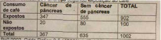
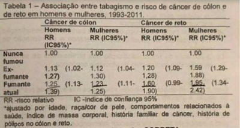
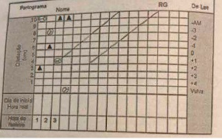
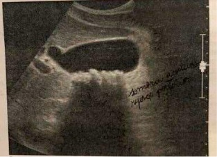
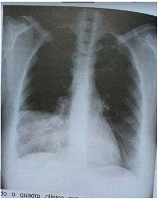

Questão 1 · Osteoartrite OA · 4000145598Mulher de 64 anos procura atendimento com queixa de dor em joelhos, que aparece ao realizar longas caminhadas e ao subir escadas. Informa também desconforto em articulações das mãos, especialmente das interfalangeanas proximais e distais, que surge quando realiza atividades domésticas como cozinhar e lavar as louças. Quadro de mais de dois anos de duração. Nega outros sintomas. Histórico de hepatite C tratada no último ano. Os dados relevantes ao exame físico são: IMC 32 kg/m² , presença de nódulos de Heberden e Bouchard em mãos bilateralmente, redução da amplitude de exão dos joelhos, com crepitações à mobilização de ambos. Paciente traz exames realizados na atenção primária: hemoglobina 13,6 g/dl, global de leucócitos 6.700/ < 20mm), fator reumatoide 38 UI/mi (VR < 14 UI/mi). Considerando a hipótese diagnóstica mais provável, indique a alternativa que contenha o tratamento farmacológico MAIS ADEQUADO para a paciente:
A Antidepressivo tricíclico em dose baixa ao se deitar
B Antiinflamatório não esteroidal tópico nas articulações acometidas
C Droga antirreumática modificadora de doença, como metotrexato
D Droga hipouricemiante, como alopurinol, em dose única diária
Questão 2 · Osteoartrite OA · 4000145597Mulher de 64 anos procura atendimento com queixa de dor em joelhos, que aparece ao realizar longas caminhadas e ao subir escadas. Informa também desconforto em articulações das mãos, especialmente das interfalangeanas proximais e distais, que surge quando realiza atividades domésticas como cozinhar e lavar as louças. Quadro de mais de dois anos de duração. Nega outros sintomas. Histórico de hepatite C tratada no último ano. Os dados relevantes ao exame físico são: IMC 32 kg/m² , presença de nódulos de Heberden e Bouchard em mãos bilateralmente, redução da amplitude de exão dos joelhos, com crepitações à mobilização de ambos. Paciente traz exames realizados na atenção primária: hemoglobina 13,6 g/dl, global de leucócitos 6.700/ < 20mm), fator reumatoide 38 UI/mi (VR < 14 UI/mi). Qual o diagnóstico mais plausível para o quadro, dentre as alternativas colocadas abaixo:
A Artrite reumatoide
B Fibromialgia
C Gota
D Osteoartrite
Questão 3 · Neurologia · Avaliação Cognitiva · 4000145596Mulher de 72 anos é levada a consulta pelo marido devido a ""esquecimento frequente"". O quadro se iniciou há 1 ano e vem evoluindo de forma progressiva com esquecimento de eventos recentes e cotidianos, tais como quais foram as refeições feitas no dia. A memória está preservada para fatos de sua juventude. Neste período, tem cado mais restrita em casa, saindo menos e apresentou um episódio de queda da própria altura. Está parcialmente dependente para atividades instrumentais, e independente para atividades básicas. Sem alterações de humor. Sem dados patológicos pregressos relevantes. Exame físico sem alterações. Mini-exame do estado mental: 17 pontos (em um total de 30 pontos avaliados). Sobre a investigação do quadro acima descrito, é CORRETO afirmar:
A Avaliação extensa dos múltiplos domínios cognitivos através de testes psicométricos é essencial para se estabelecer o diagnóstico de demência
B Realização de exame de imagem de sistema nervoso central está contra-indicada, devido à ausência de déficits focais ao exame físico
C Realização rotineira de punção lombar é relevante para excluir causas frequentes de declínio cognitivo como doenças infecciosas, inflamatórias e neoplásicas
D Rotina laboratorial básica com hemograma, função tireoideana e dosagem de vitamina B12 pode indicar causa potencialmente reversível do declínio cognitivo
Revisar: possível letra faltando em enunciado
Questão 4 · Tratamento · 4000145595Homem de 62 anos, tabagista 40 anos/maço, obeso, procura atendimento devido a quadro de dispneia progressiva há 3 anos, associada a tosse produtiva com expectoração amarelada mais intensa pela manhã, que clareia ao longo do dia. Atualmente, sente dispneia mesmo para pentear os cabelos. Informa duas passagens na UPA no ano anterior devido a quadro de ""gripe forte"" e piora importante da dispneia, tendo feito uso de antibioticoterapia nas duas ocasiões. Ao exame, apresenta-se em regular estado geral, FC 90 bpm, FR 25 irpm, PA 120/80 mmHg, Sat 02 em ar ambiente 90%. Ao exame do aparelho respiratório, apresenta tempo expiratório prolongado com contração de musculatura abdominal, murmúrio vesicular diminuído e crepitações móveis grosseiras protoinspiratórias e expiratórias. Edema de membros inferiores 2+/4+. Fígado de borda romba, amolecido, palpável a 7cm do rebordo costal direito. Sobre o arsenal terapêutico disponível para este paciente, é ERRADO afirmar:
A O uso de azitromicina a longo prazo possui ação anti-inflamatória e reduz o risco de ocorrência de exacerbações no próximo ano
B O uso de corticoide inalatório em associação com terapia broncodilatadora combinada de longa ação melhora função pulmonar e reduz risco de exacerbações
C O uso de corticoide sistêmico é benéfico devido ao histórico de infecções respiratórias associadas ao padrão de expectoração apresentado
D O uso de terapia broncodilatadora combinada de longa ação tem o potencial de melhorar sintomas e a sensação de dispneia do paciente
Questão 5 · Diagnostico · 4000145594Homem de 62 anos, tabagista 40 anos/maço, obeso, procura atendimento devido a quadro de dispneia progressiva há 3 anos, associada a tosse produtiva com expectoração amarelada mais intensa pela manhã, que clareia ao longo do dia. Atualmente, sente dispneia mesmo para pentear os cabelos. Informa duas passagens na UPA no ano anterior devido a quadro de ""gripe forte"" e piora importante da dispneia, tendo feito uso de antibioticoterapia nas duas ocasiões. Ao exame, apresenta-se em regular estado geral, FC 90 bpm, FR 25 irpm, PA 120/80 mmHg, Sat 02 em ar ambiente 90%. Ao exame do aparelho respiratório, apresenta tempo expiratório prolongado com contração de musculatura abdominal, murmúrio vesicular diminuído e crepitações móveis grosseiras protoinspiratórias e expiratórias. Edema de membros inferiores 2+/4+. Fígado de borda romba, amolecido, palpável a 7cm do rebordo costal direito. Qual é o mecanismo de origem dos ruídos adventícios apresentados à ausculta respiratória do paciente?
A Abertura e fechamento das vias respiratórias contendo secreção espessa
B Perda da textura do parênquima com consolidação em torno de brônquio pérvio
C Reabertura súbita de bronquíolos previamente ocluídos
D Redução do lúmen de bronquíolos com vibração de suas paredes à passagem do ar
Questão 6 · Fatores de Fisco · Vigilância · Fisiopatologia e Fatores de Risco · 4000145593Homem de 52 anos, obeso, tabagista, apresenta quadro crônico de pirose, com mais de 5 anos de duração. Já em uso de inibidor de bomba de prótons há longa data. Sem outros sintomas gastrointestinais, sem alteração de hábito evacuatório ou do aspecto das fezes. Percebe ganho de peso não mensurado, no último ano. Sem dados patológicos pregressos ou história familiar relevante. Exame físico sem alterações. Revisão laboratorial com hemograma, funções renal e hepática e per l lipídico, normais. Marque a alternativa que contém o exame complementar MAIS indicado neste momento, e o MOTIVO de sua indicação:
A Endoscopia digestiva alta -> rastreio de esôfago de Barrett
B Endoscopia digestiva alta -> rastreio de neoplasia gástrica
C Manometria esofageana -> pesquisa de dismotilidade esofageana
D Radiografia contrastada de esôfago, estômago e duodeno -> pesquisa de esofagite
Questão 7 · O f ígado anatomia e histologia · 4000145592Sobre o exame físico do abdome, é CORRETO afirmar:
A A identificação de macicez à percussão do espaço de Traube é método menos sensível para identificação de esplenomegalia do que a palpação profunda bimanual
B A percussão ao longo da linha hemiclavicular D apresenta maior especificidade para detecção de hepatomegalia do que a palpação profunda do abdome em pneumopatas
C Em casos de abdome doloroso, manobras de palpação e percussão devem ser iniciadas nas áreas de maior sensibilidade, deixando áreas indolores para o final do exame
D O sinal de piparote é mais sensível para detecção de ascite do que o sinal de macicez móvel encontrado à mudança de decúbito do paciente durante a percussão
Questão 8 · Fisiologia · 4000145591Mulher de 28 anos, tabagista, em uso de anticoncepcional oral combinado, é admitida em sala de emergência em franca insu ciência respiratória. Ao exame apresenta edema de membro inferior esquerdo até raiz de coxa, assimétrico. PA 90/60mmHg; FR 37irpm; FC 135bpm; Sat 02 em ar ambiente 78%. Ausculta respiratória sem alterações. Eletrocardiograma revela taquicardia sinusal e padrão S1 Q3T3 com ondas T negativas em precordiais direitas. O mecanismo siopatológico predominante no quadro de insuficiência respiratória desta paciente é:
A Efeito espaço morto
B Hipoventilação
C Limitação de difusão
D Shunt verdadeiro
Questão 9 · Abordagem terapêutica · 4000145590Em pacientes com descompensação aguda de insu ciência cardíaca, que se apresentam em pronto atendimento com padrão de congestivo associado a boa perfusão tecidual periférica (per l quente e úmido), é princípio fundamental de seu tratamento:
A Prescrição sistemática e rotineira de vasodilatador parenteral, como nitroglicerina em bomba de infusão, com objetivo de se aliviar pós-carga cardíaca
B Suspensão transitória de suas medicações de uso habitual, especialmente betabloqueadores, para se evitar evolução para perfil frio de descompensação
C Utilização de diurético de alça parenteral em dose otimizada, mesmo em pacientes que apresentem piora de função renal à admissão hospitalar
D Utilização de diureticoterapia preferencialmente por via oral, com objetivo de facilitar esquema de prescrição para alta do paciente
Questão 10 · Psiquiatria · Dependência de Tabaco · 4000145589Homem de 28 anos, tabagista há 5 anos, atualmente fumando cerca de 1 maço por dia. Procura atendimento pois deseja interromper o hábito. Informa já ter tentado parar de fumar no último ano, mas retomou em poucos dias, em maior intensidade, após perda do emprego e piora de sintomas de ansiedade sem o uso do cigarro. Ainda está desempregado e mantêm os sintomas de ansiedade, mas revela-se bastante incomodado com a manutenção do hábito, que vem prejudicando relações sociais e familiares. Para auxiliar o paciente em seu desejo, recomenda-se:
A Abordagem comportamental e farmacológica, buscando apoio social, antecipando barreiras e explicando sobre a efetividade do tratamento medicamentoso
B Abordagem comportamental isolada, considerando os poucos anos de tabagismo e o histórico de tentativas prévias
C Abordagem farmacológica isolada, considerando o perfil ansioso do paciente e a baixa probabilidade de adesão a medidas comportamentais
D Orientar o paciente de que este talvez não seja um bom momento de nova tentativa, considerando a manutenção dos fatores causadores de estresse e ansiedade
Questão 11 · Tratamento · 4000145588Mulher de 74 anos, sem comorbidades, procura atendimento com quadro de dor torácica em queimação, intensa, de 4 dias de duração, refratária a analgesia com dipirona e anti-inflamatório. A dor se localiza em região dorsal esquerda, na altura da vértebra T1 O, e se irradia para região anterior do tórax, ipsilateralmente. Ao exame, paciente apresenta no local da dor vesículas de conteúdo claro agrupadas, de base eritematosa, em trajeto que parte da linha medial do dorso até borda esternal esquerda. Diante do quadro clínico, o tratamento MAIS ADEQUADO neste momento é:
A Aciclovir e hidrocortisona em creme, tópicos, 3 vezes ao dia por 7 dias
B Aciclovir parenteral 1 0mg/kg a cada 8 horas, por 7 a 14 dias
C Famciclovir via oral 500mg a cada 8 horas, por 7 dias
D Ganciclovir parenteral Smg/kg a cada 12 horas, por 14 dias
Questão 12 · Doença de Graves · Endocrinologia · 4000145587Mulher de 24 anos inicia tratamento com metimazol 30mg por dia devido a diagnóstico de doença de Graves. São efeitos colaterais raros, porém potencialmente graves, que devem ser clinicamente monitorizados ao longo do tratamento:
A Hepatotoxicidade, agranulocitose primária e pancreatite
B Hepatotoxicidade, neurotoxicidade e pancreatite
C Nefrotoxicidade, agranulocitose primária e neurotoxicidade
D Nefrotoxicidade, pancreatite e neurotoxicidade
Questão 13 · Odds Ratio ou Razão de Chances · 4000145586Estudo desenvolvido para avaliar a associação entre consumo de café e câncer de pâncreas selecionou pacientes com diagnóstico histopatológico de câncer de pâncreas, internados em quatro hospitais e pacientes sem câncer de pâncreas, atendidos pelos mesmos médicos que diagnosticaram as neoplasias, selecionados nos mesmos hospitais e na mesma ocasião. Os resultados estão apresentados na tabela abaixo; Analise os resultados e assinale a alternativa CORRETA:

A O café mostrou ter uma associação causal com o Câncer de Pâncreas
B O Intervalo de confiança não deve ser considerado uma medida de significância estatística
C O valor p encontrado sugere que os pesquisadores devem aceitar a hipótese nula para não cometerem o erro tipo 1
D Viés de seleção seria introduzido pela inclusão de controles internados por doenças gástricas
Questão 14 · Probabilidade préteste e valor preditivo positivo · 4000145585Observe o uxograma a seguir. O uxograma 1 apresenta uma estratégia para rastreamento de sí lis em indivíduos assintomáticos. É CORRETO afirmar que:

A Após realizar os dois testes conforme proposto, a probabilidade de pessoas com o teste treponêmico positivo ter sífilis irá aumentar
B Após realizar os dois testes, a capacidade de identificar corretamente aqueles que têm sífilis aumentará
C Após realizar os dois testes, a capacidade de identificar corretamente aqueles que não tem sífilis diminuirá
D Quanto maior a concordância observada entre o teste não treponêmico e o teste treponêmico, maior será a acurácia da estratégia de rastreamento
Questão 15 · valor p e intervalo de conf iança · Risco Relativo RR Razão de Riscos · 4000145584A tabela 1 mostra resultados de um estudo de coorte que incluiu homens e mulheres livres de câncer de cólon e reto no início do estudo seguidos por 18 anos. A presença de câncer de cólon e de reto foi identi cada com consulta ao sistema de registro de câncer. A prevalência de tabagismo no início do estudo era de 18,2% para homens e 12,4% para mulheres. Tabela 1 - Associação entre tabagismo e risco de câncer de cólon e de reto em homens e mulheres, 1993-2011. Analise a Tabela 1 e assinale a alternativa CORRETA:

A Este tipo de estudo não permite estudar outras doenças relacionadas ao tabagismo
B O tabagismo atual foi associado com o risco de desenvolver câncer de cólon e de reto em homens e mulheres, sendo o risco de câncer de reto por tabagismo maior nas mulheres
C Os resultados apontam que 25% dos casos de câncer de cólon e 60% dos casos de câncer de reto podem ser atribuídos ao tabagismo atual nos homens; nas mulheres esses percentuais são 23% e 95%, respectivamente
D Perdas de seguimento por doenças relacionadas ao tabagismo podem ter atenuado a incidência de câncer de cólon e de reto observada em ambos os sexos, mas com maior impacto nos homens
Questão 16 · Níveis de Prevenção e outros conceitos associados · 4000145583Com o objetivo de obter melhores resultados nas ações de promoção da saúde e prevenção das doenças, especialmente das doenças crônicas não transmissíveis mais prevalentes na área de abrangência da unidade básica de saúde, organizou-se um seminário com a equipe de saúde para discutir intervenções adequadas. Leia as assertivas a seguir sobre medidas de intervenção e marque a alternativa ERRADA.
A A adoção de medidas para reduzir a exposição a fatores de risco para essas doenças na fase pré-clínica caracteriza a prevenção primária
B A Implementação de programa de rastreamento adequado pode levar ao aumento da prevalência das doenças alvo do programa
C Medidas de prevenção terciária na fase clínica das doenças poderão prevenir complicações e mortes prematuras nas pessoas que já têm as doenças
D Programas de rastreamento são justificáveis se a história natural for alterada pela intervenção
Questão 17 · Política Nacional de Humanização · 4000145582A Política Nacional de Humanização coloca o acolhimento como diretriz operacional, o que exige uma nova atitude de mudança no fazer em saúde com diversas implicações, sendo uma delas:
A A identificação dos pacientes que necessitam de tratamento imediato, de acordo com o potencial de risco e grau de sofrimento
B A presença de um médico no atendimento de porta de entrada da unidade para que o usuário seja classificado de acordo com sua vulnerabilidade à doença
C A reorganização do serviço de saúde a partir da problematização dos processos de trabalho sob a liderança e coordenação do médico
D O aumento da responsabilização dos profissionais de saúde e elevação dos coeficientes de vínculo e confiança
Questão 18 · Pneumoconiose devida à Poeira de Sílica Silicose · 4000145581A exposição ocupacional a poeiras de sílica pode resultar em uma forma de brose intersticial pulmonar conhecida como Silicose. Com relação a esta doença é CORRETO afirmar:
A A forma aguda é rara e evolui para cura espontânea em até 5 anos
B A tomografia computadorizada constitui a propedêutica de primeira escolha quando da suspeita de silicose
C Observa-se maior prevalência de tuberculose entre os trabalhadores silicóticos
D Trata-se de uma doença do Grupo ll da Classificação de Schilling
Questão 19 · Prevalência pontual · 4000145580Um teste diagnóstico com 90% de especi cidade e 80% de sensibilidade aplicado a um grupo de mil pessoas resultou em 170 resultados positivos. Isto posto, a prevalência da doença no grupo estudado é:
A 1,80%
B 10%
C 21,50%
D 42%
Questão 20 · Princípios e Diretrizes do Sistema Único de Saúde SUS · 4000145579Princípios e Diretrizes do SUS a serem operacionalizados pela Atenção Básica Princípios e Diretrizes do SUS na Constituição Federal Paciente de 40 anos de idade, residente em um município com menos de 10.000 habitantes, engravidou do primeiro lho e iniciou o pré-natal na unidade básica de saúde. Na segunda ultrassonogra a, foi identi cada malformação fetal, sendo a gestante encaminhada para continuidade do pré-natal em serviço de alto risco na capital do estado, onde o parto foi a nal realizado. Quais princípios do SUS foram observados na condução do caso:
A Equidade e integralidade
B Regionalização e integralidade
C Universalidade e equidade
D Universalidade e regionalização
Questão 21 · Medicina Preventiva · Tipos de Estudos Epidemiológicos · 4000145578Em uma instituição hospitalar foi realizado estudo no qual foram analisados 202 pacientes submetidos a revascularização miocárdica entre 17 de janeiro e 31 de julho de 2009. Os pacientes foram estrati cados em: Grupo G1-stent, os pacientes que receberam stents; e Grupo G2-operatório de cirurgia de revascularização miocárdica. Um script contendo 62 itens clínicos, hemodinâmicos e cirúrgicos foi usado para a coleta de dados dos prontuários médicos. O estudo concluiu que a revascularização cirúrgica é o melhor procedimento para pacientes com doença coronariana múltipla, especialmente em pacientes diabéticos: permite a revascularização significativamente mais completa, reduz o número de reinternações por causas cardíacas, reduzindo o retorno da angina e melhora a qualidade de vida após cirurgia, com taxas hospitalares e de mortalidade tardia semelhantes aos obtidos por meio de implante de stent. Qual foi o desenho de estudo utilizado?
A Ecológico
B Ensaio clinico
C Observacional de coorte
D Transversal
Questão 22 · Quasiexperimento · 4000145577Um estudo foi realizado para verificar o efeito do método Pilates (MP) na postura de idosas em uma comunidade. Realizou- se um ensaio clínico em amostra de 40 idosas de idades entre 60 e 80 anos, divididas igualmente em Grupo Pilates (GP) e Grupo Controle (GC). Os grupos responderam questionário sociodemográ co e foram avaliados, em momentos pré e pós- intervenção, utilizando biofotogrametria. O GP executou um protocolo de 12 exercícios do MP, duas vezes por semana, durante 50 minutos, por 12 semanas. Os resultados obtidos mostraram que, na visão anterior, no momento antes da intervenção, a distância entre os acrômios, epicôndilos e processo estiloide foram menores no GC, em relação ao GP. Veri cou-se que após a intervenção não houve diferença significativa entre os grupos. Na visão posterior observou-se diferença estatisticamente significativa nas variáveis: distância do ângulo superior (p=0,01) e inferior da escápula (p=0,02) do GP em relação ao GC. Concluiu-se que o MP promoveu efeito positivo em algumas variáveis do per l postural de idosas, podendo ser empregado em grupos de práticas corporais comunitárias. Este ensaio clínico é:
A Não randomizado, controlado
B Não randomizado, controlado e aberto
C Randomizado, duplo-cego, placebo-controlado
D Randomizado, não controlado e aberto
Revisar: possível letra faltando em enunciado
Questão 23 · Acidente de trabalho · 4000145576Com relação à Comunicação de Acidentes de Trabalho - CAT é CORRETO afirmar que:
A A CAT deve ser emitida em 6 vias (destinadas ao INSS, empresa, segurado ou dependente, SUS, Ministério do Trabalho e Ministério Público)
B Deve ser emitida apenas para os acidentes que exijam assistência médica e afastamento do trabalho por mais de 24 horas
C Deve ser emitida para todo e qualquer trabalhador em caso de acidente de trabalho
D O envio pela Internet da CAT (CAT eletrônica) facilita o registro de acidentes que não geram benefício acidentário
Questão 24 · Processo saúdedoença · Determinação Social da SaúdeDeterminantes Sociais da Saúde DSS · 4000145575Os Determinantes Sociais de Saúde (DSS) são os fatores sociais, econômicos, culturais, étnicos/raciais, psicológicos e comportamentais que in uenciam a ocorrência de problemas de saúde e fatores de risco à população, tais como moradia, alimentação, escolaridade, renda e emprego. Constitui princípio geral para a implementação de intervenção sobre o DSS:
A Centralizar a implementação das ações sobre os DSS no governo federal
B Que se transforme em meta prioritária para o governo e toda a sociedade a distribuição equitativa do bem estar e da saúde
C Ter a coordenação das ações sob a responsabilidade do Ministério Público
D Transformação das ações sobre os determinantes sociais em campanhas
Questão 25 · Transtorno do Espectro Autista TEA · Psiquiatria · 4000145574Qual das características NÃO se enquadra no Transtorno do Espectro Autista:
A Existe um tipo em que são inteligentes, chegando a serem confundidos com gênios
B Há deficiência no domínio da linguagem
C O padrão de comportamento é restritivo e repetitivo
D Os sintomas raramente estão presentes no início da infância
Questão 26 · Diagnóstico · Ref luxo Gastroesof ágico RGE · Pediatria · 4000145573Lactente de 2 meses de idade, nascido à termo, apresenta regurgitações frequentes após alimentação. Está sempre irritado e dorme pouco. Já teve pneumonia com 1 mês de idade. Sua cabeça está apresentando uma postura anormal deslocada para a direita e para traz. Não ganhou peso no último mês. O diagnóstico MAIS PROVÁVEL é:
A Alergia à proteína do leite de vaca
B Doença do refluxo gastroesofágico
C Doença neurológica
D Imunodeficiência
Questão 27 · Manejo inicial e pacotes · 4000145572Na sepse, a escolha da antibioticoterapia deve ser direcionada de acordo com a epidemiologia local, o foco da infecção, e o resultado das culturas. Essas informações, geralmente não estão disponíveis no atendimento inicial, devendo a prescrição ser iniciada de forma empírica. Na escolha dos antibióticos é CORRETO afirmar:
A No paciente neutropênico febril com suspeita de infecção pelo cateter de longa permanência é indicado a monoterapia com vancomicina
B O tratamento de sepse com antibioticoterapia, deve ter no mínimo 14 dias de duração
C Paciente com infecção adquirida no ambiente hospitalar deve receber associação de cefalosporina de terceira geração e oxacilina
D Sepse sem foco definido, infecção comunitária, paciente previamente hígido, dar preferência à monoterapia com cefalosporina de terceira geração
Questão 28 · Tratamento · Pediatria · 4000145571Paciente de cinco anos de idade, dá entrada no Pronto Atendimento, em estado de choque séptico, caracterizado por rubor das extremidades, enchimento capilar de 2 segundos, pulsos cheios, pressão arterial diminuída e baixo débito urinário. Foi iniciado prontamente reposição volêmica com solução fisiológica sem resposta. O próximo passo é INICIAR:
A Adrenalina
B Nilrinona
C Noradrenalina
D Vasopressina
Questão 29 · Nutrição em Cirurgia e Recuperação PósOperatória · Função da Bile · Gastroenterologia · 4000145570Em relação à terapia nutricional de pacientes com colestase crônica, é CORRETO afirmar:
A A combinação de má absorção de triglicerídeos de cadeia média e a ingestão inadequada de energia, podem levar a deficiência de ácidos graxos essenciais
B Existe deficiência de absorção de vitaminas lipossolúveis
C Os lipídeos são a principal fonte de calorias
D Os pacientes tem tendência a deficiência de cobre, que deverá ser fornecido pela ingestão de alimentos ricos neste mineral
Questão 30 · Alta hospitalar do RN · Cuidados neonatais · Pediatria · 4000145569Em relação ao alojamento conjunto, para os primeiros cuidados com o recémnascido é ERRADO afirmar:
A No alojamento conjunto o recém-nascido deve receber a primeira dose contra hepatite B e a vacina BCG
B O aleitamento ao seio, deve ser em regime de livre demanda
C O ideal é que o recém-nascido permaneça no alojamento conjunto por pelo menos 48 horas, após o nascimento, seja por parto normal ou cesariana
D O recém-nascido deve permanecer ao lado da mãe, em decúbito ventral, em leito individual, de preferência em berço com cuba de acrílico
Questão 31 · Crises álgicas · Hematologia · 4000145568Em relação ao tratamento da crise dolorosa vaso- oclusiva grave da anemia falciforme é CORRETO afirmar:
A A criança deve ser medicada com morfina para controle das dores
B A oxigenioterapia é sempre indicada
C É contraindicado a hiperidratação venosa
D É indicado transfusão de glóbulos vermelhos
Questão 32 · Diarreia Aguda · Invasivo · Pediatria · 4000145567Paulo de 12 meses de idade, previamente saudável, há 4 dias apresenta diarreia , acompanhada de sangue em pequeno volume nas fezes e dor ao evacuar. Está tendo febre não termometrada e hiporexia. Ao exame: alerta, corado, mucosas levemente ressecadas, pulsos cheios, uxo de extremidades de 2 segundos. Eupneico, abdome ácido à palpação. Demais aparelhos sem alterações. Alimentação apropriada para a idade. Em relação ao tratamento e mecanismo de produção da diarreia é CORRETO afirmar:
A A droga antimicrobiana de escolha é a sulfametoxazoltrimetropim
B A fórmula láctea deve ser substituída por fórmula semielementar
C É indicado uso de probiótico
D O agente etiológico provável é uma bactéria, invadindo a mucosa do cólon
Questão 33 · Classif icação do paciente · 4000145566Paulo de 12 meses de idade, previamente saudável, há 4 dias apresenta diarreia , acompanhada de sangue em pequeno volume nas fezes e dor ao evacuar. Está tendo febre não termometrada e hiporexia. Ao exame: alerta, corado, mucosas levemente ressecadas, pulsos cheios, uxo de extremidades de 2 segundos. Eupneico, abdome ácido à palpação. Demais aparelhos sem alterações. Alimentação apropriada para a idade. Em relação à conduta quanto à hidratação desta criança está INDICADO:
A Aumentar a oferta de líquidos podendo ser água e solução de hidratação oral, após as evacuações
B Infundir solução fisiológica 0,9 %-20ml/kg/ via venosa
C Oferecer solução de hidratação administrada por sonda nasogástrica
D Utilizar terapia de reidratação oral (TRO)
Questão 34 · Hematologia · Crise aplásica · 4000145565Qual a afirmativa CORRETA em relação a crise aplástica que pode ocorrer em uma criança com anemia falciforme?
A Apesar de a recuperação ser espontânea, a criança deve ser internada, pois não há como prever até que valor a queda da hemoglobina vai atingir
B Geralmente tende a recorrer com frequência
C Geralmente é desencadeado por intercorrência infecciosa bacteriana
D Leucócitos e plaquetas geralmente se encontram diminuídos
Questão 35 · Distúrbios respiratórios do período neonatal · Pediatria · Neonatologia · 4000145564Recém-nascido, pré- termo (32 semanas de idade gestacional), desenvolve nas primeiras horas de nascimento, gemência, retrações intercostais, taquipneia, batimentos de aletas nasais, cianose e aumento da necessidade de oxigênio. De acordo com o diagnóstico MAIS PROVÁVEL, é esperado encontrar na radiografia de tórax:
A Áreas de atelectasia, com aspecto nodular grosseiro
B Áreas de hiperinsuflação
C Infiltração reticulogranular difusa, homogênea e simétrica
D Pneumotórax
Questão 36 · Neurologia · Síndrome de LennoxGastaut · 4000145563Em relação às crises epilépticas do tipo Lennox- Gastaut é ERRADO afirmar:
A A primeira droga de escolha para o tratamento é a carbamazepina
B As crises epilépticas geralmente são múltiplas e de difícil controle
C É causa de retardo mental
D Geralmente acometem crianças acima de um ano de idade
Questão 37 · Descolamento prematuro de placenta DPP · 4000145562Mulher, G1 P0, 36 semanas de gestação, usuária de cocaína, chega à maternidade com sangramento vaginal abundante, instável hemodinamicamente. Ao exame físico, observa-se hipertonia uterina, batimento cardíaco fetal de 90bpm e toque vaginal com 2cm de dilatação do colo. Sobre o caso clínico, assinale a alternativa ERRADA.
A Deve-se prescrever terbutalina e investigar vitalidade fetal com cardiotocografia
B Deve-se proceder a rotura de membrana amniótica imediatamente
C O diagnóstico mais provável é de descolamento prematuro de placenta normoinserida
D Útero de Couvelaire é uma das complicações desta condição
Questão 38 · Obstetrícia · Parto · Partograma · 4000145561Gestante é admitida na maternidade e a condução do seu parto, segue o seguinte partograma. Considerando que o parto ocorreu em 2 horas e 40 minutos, assinale a alternativa gue NÃO ESTÁ ASSOCIADA a este tipo de parto.

A Hemorragia puerperal materna
B Infecção
C Laceração de trajeto de parto materna
D Lesão de plexo braquial no RN
Questão 39 · Conduta · Síndrome HELLP · Obstetrícia · 4000145560Mulher com 36 semanas de gestação com diagnóstico de síndrome hipertensiva, em uso de metildopa 1 g/dia, comparece para consulta de pré-natal sem queixa e com bom controle pressórico. Ao exame físico, apresenta-se com pressão arterial de 130 x 84 mmHg, edema de 1 +/4+ em membros inferiores e altura uterina de 32 centímetros. Cardiotocogra a evidenciou feto ativo. Traz exames laboratoriais: hemoglobina: 13,0 g/dL; plaquetas: 99.000/mcL; creatinina: 0,9 mg/dL; transaminase glutâmico-oxalacética: 32 U/L; transaminase glutâmico-pirúvica: 27 U/L. Com base neste caso, assinale a alternativa que representa a conduta mais CORRETA.
A Internação imediata para propedêutica de HELLP síndrome
B Retorno semanal até 38 semanas e então agendar resolução devido ao diagnóstico de pré-eclampsia
C Retorno semanal até 39 semanas com avaliação semanal de vitalidade fetal e comprometimento sistêmico materno
D Retorno semanal até 41 semanas com avaliação semanal de vitalidade fetal e comprometimento sistêmico materno
Questão 40 · Classif icação · Obstetrícia · 4000145559Mulher, retorna para consulta de pré-natal com curva pressórica demonstrando diversas medidas de 140x90mmHg de pressão arterial. No momento encontra-se com 16 semanas de gestação e apresenta edema de 1 + em membros inferiores. Com base neste caso, assinale a alternativa CORRETA.
A Trata-se de uma hipertensão arterial crônica com pré-eclampsia sobreposta devido ao edema progressivo
B Trata-se de uma hipertensão arterial gestacional, pois o diagnóstico foi realizado durante a gestação
C Trata-se de uma pré-eclampsia, pois a paciente é hipertensa e apresenta edema
D Trata-se provavelmente de uma hipertensão arterial crônica devido à idade gestacional
Questão 41 · Abortamento · Obstetrícia · Sangramento primeira metade · 4000145558Mulher é admitida com sangramento via vaginal importante e atraso menstrual. Tem tempo de amenorreia de 7 semanas, com teste de gravidez urinário positivo. Ao exame físico: paciente estável, apresentando dor à palpação de baixo ventre, sem dor à descompressão brusca. Especular: observada moderada quantidade de sangue em fundo de saco vaginal e ao toque vaginal; colo fechado. Com base neste caso, assinale a alternativa CORRETA.
A A ultrassonografia transvaginal e a dosagem do beta-HCG quantitativo são essenciais ao diagnóstico
B Devido ao quadro de abdome agudo a conduta é videolapascopia
C O diagnóstico é de aborto completo, pois o colo está fechado
D O uso de metotrexate é uma opção terapêutica ao caso
Questão 42 · Doenças de vulva e vagina · 4000145557Sobre as lesões da vulva, dentre as afirmações abaixo descritas, assinale a alternativa CORRETA.
A A vulvoscopia é dispensável na suspeita de líquen escleroatrófico
B O líquen escleroatrófico apresenta risco de malignização
C O líquen escleroatrófico está associado à exposição excessiva ao estrogênio
D O uso de corticoide é a primeira linha de tratamento no caso de líquen plano
Questão 43 · Miomatose uterina · 4000145556Sobre leiomiomas, analise as a rmativas abaixo e dê valores Verdadeiro (V) ou Falso (F). () São tumores que respondem a ação da progesterona e do estrogênio. () T umores subserosos estão associados a dor pélvica por torção. () Apenas 1 % a 3% dos casos de infertilidade estão associados a presença de leiomiomas. () Dor pélvica aguda é a apresentação mais frequente desta condição. Assinale a alternativa que apresenta a sequência CORRETA de cima para baixo.
A V, F, F, V
B V, F, V, F
C V, V, V, F
D F, V, V, V
Questão 44 · Incontinência urinária · Climatério · 4000145555Mulher, 53 anos, obesa, refere sintomas de urgência miccional que pioraram após a menopausa, sem queixas aos esforços. Ao exame físico: observada atro a genital, sem distopias. Investigação infecciosa foi negativa. Sobre o quadro, uma opção terapêutica indicada na ABORDAGEM INICIAL é:
A Cirurgia de Burch
B Cirurgia de sling
C Fisioterapia
D Terapia hormonal
Questão 45 · Abordagem da paciente com queixa de corrimento vaginal · 4000145554Mulher, 19 anos, retorna de viagem com queixa de corrimento cujo odor e prurido a estão incomodando. Ao exame físico: apresenta conteúdo vaginal amarelado, pH: 5,5 e teste das aminas positivo. Ao toque não se observa dor à palpação anexial ou de colo uterino. Considerando-se o possível diagnóstico, assinale a alternativa CORRETA.
A Entre suas complicações, encontra-se a obstrução tubária
B O exame a fresco demonstrará presença de pseudohifas
C O pH ácido sugere infecção por Candida sp
D O uso de tinidazol é uma opção terapêutica
Questão 46 · Puberdade Precoce · Pediatria · Puberdade · 4000145553Menina, 6 anos, é levada à consulta ginecológica pela mãe com queixa de aparecimento de mamas. Ao exame físico: observado tecido mamário e ausência de pêlos em região de monte pubiano. Sobre o diagnóstico e conduta para esse caso, assinale a alternativa CORRETA.
A Não se trata de puberdade precoce, pois o desenvolvimento de pêlos pubianos antecede a telarca
B Não se trata de puberdade precoce, uma vez que a telarca antecede a pubarca
C Provavelmente trata-se de um caso de telarca precoce e a investigação inicial é feita com o citologia vaginal a fim de verificar atividade estrogênica.
D Trata-se de um caso de puberdade precoce e está indicada a terapêutica com análogos do GnRH
Questão 47 · Contraindicações · 4000145552Assinale, das alternativas abaixo, qual NÃO É considerada contraindicação absoluta à terapia de reposição hormonal.
A Hepatite grave com alteração de transaminases
B História atual de câncer de endométrio
C História familiar de câncer de mama
D História pessoal de câncer de mama
Questão 48 · Conceitos · 4000145551Em relação ao ciclo menstrual normal, dentre as afirmações abaixo, assinale a alternativa ERRADA.
A A regularidade consiste na diferença inferior a 9 dias entre o ciclo mais longo e o ciclo mais curto
B O intervalo é o período medido entre o início da menstruação e o final da mesma
C O período menstrual normal tem duração de até 8 dias
D O volume de sangramento é de caráter subjetivo podendo ser classificado em volumoso, normal ou discreto
Questão 49 · Inf ecção por C dif f icile · 4000145550Em relação à colite pseudomembranosa, assinale a alternativa ERRADA:
A Os esporos do microorganismo responsável pela etiologia tem sobrevida efêmera quando fora do organismo humano
B O microorganismo pode ser encontrado em fezes de pacientes assintomáticos
C O teste ELISA para as toxinas A e B nas fezes tem altas sensibilidade e especificidade
D Pode ocorrer translocação das toxinas para a circulação portal
Questão 50 · Cirurgia · Resposta Metabólica de Queimaduras · 4000145549Em relação aos grande queimados, assinale a alternativa ERRADA:
A Níveis circulantes elevados de catecolaminas, glicocorticoides e glucagon estimulam o catabolismo proteico, a gliconeogênese e as glicogenólise
B O balanço nitrogenado negativo, a resistência à insulina e a lipólise podem persistir por até um ano após lesões graves
C O débito urinário é um bom indicador clínico do status do volume circulante
D O uso de propranolol está formalmente contraindicado no tratamento dos grandes queimados
Questão 51 · Cicatrização de Feridas · Cirurgia · 4000145548Em relação à cicatrização, assinale a alternativa CORRETA:
A A presença de fator de crescimento é essencial à sobrevida dos fibroblastos
B Deve-se evitar a administração de drogas antiinflamatórias que interferem na ação dos polimorfos nucleares (PMN), essenciais para o processo ciacatricial
C Macrófagos e plaquetas são essenciais para angiogênese
D Os glicocorticoides aumentam a produção (síntese) de colágeno
Questão 52 · Fisiopatologia do choque no trauma · O Choque hemorrágico · Cirurgia · 4000145547Homem de 47 anos, após queda de andaime evoluiu com choque hemorrágico secundário a grave lesão hepática. Em relação à fisiopatologia e à resposta ao choque hemorrágico, assinale a alternativa ERRADA:
A Na hipotensão, a liberação de noradrenalina e adrenalina ativa os receptores adrenérgicos do miocárdio e da musculatura lisa
B O primeiro mecanismo de compensação em resposta à diminuição do volume intravascular é o aumento da atividade simpática
C Ocorre aumento da frequência e da contratilidade cardíaca, assim como aumento da resistência vascular periférica
D Pela ação das catecolaminas observa-se significativa e paradoxal diminuição da glicose no sangue
Questão 53 · Hierarquização do Atendimento e Avaliação Primária · Cirurgia · 4000145546Paciente vítima de queda de altura, cerca de 4 metros. À admissão, apresentava-se hipocorado, taquicárdico, queixando dor na bacia, no dorso e no calcâneo (que apresentava deformidade). Ao exame físico, foram observadas instabilidade à palpação da bacia e equimose perineal. Durante a avaliação primária está ERRADO:
A Fazer o enfaixamento pélvico, antes de confeccionar a radiografia da bacia
B Manter a estabilização da coluna até que se possa afastar traumatismo raquimedular
C Realizar cateterismo vesical de demora, para monitorizar o débito urinário
D Realizar ultrasso Fast, em busca de causas para o choque hemorrágico
Questão 54 · Endocrinologia · Câncer de Tireoide · 4000145545Em relação aos tumores malignos da tireoide, analise as a rmativas abaixo e marque como Verdadeiro (V) e Falso (F), e assinale a alternativa CORRETA: 1 - O carcinoma papilífero é o tipo histológico mais comum e geralmente o de melhor prognóstico; 2 - O carcinoma folicular tem pior prognóstico que o papilífero por se tratar de neoplasia indiferenciada; 3 - A tireoglobulina é fundamental no acompanhamento de todos tipos histológicos de tumores malignos da tireoide; 4 - De acordo com a ATA 2015, nódulos tireóideos menores de 1,0cm não devem ser puncionados
A F - V - F - V
B V - F - F - F
C V - F - F - V
D F - V - V - V
Questão 55 · História Clínica e Exame f ísico · História Clínica e Exame f ísico · Diagnósticos Dif erenciais · 4000145544OLM,sexo feminino, 64 anos de idade, foi submetida a gastrectomia total para tratamento de um adenocarcinoma gástrico. No quinto dia pós-operatório evoluiu com leucocitose e febre de 38,5º C. Assinale a alternativa ERRADA no que se refere à ocorrência de febre e complicações pós-operatórias:
A A atelectasia constitui a causa mais comum de febre nas primeiras 48 horas de pósoperatório, sendo mais frequente em pacientes submetidos a anestesia geral e quando realizadas incisões abdominais altas
B A febre da peritonite secundária à fístula geralmente ocorre até o quarto dia pósoperatório, não sendo frequente o aparecimento de alterações sistêmicas, como taquicardia e leucocitose
C A pneumonia pós-operatória acarreta mortalidade elevada, sendo diagnosticada comumente por volta do 4ºdia pós-operatório, e sendo uma das principais causas de morte por infecção hospitalar
D O principal mecanismo desencadeador da febre, em resposta aos pirogênios exógenos pode ocorrer por intermédio da produção pelos leucócitos de interleucinas, fator de necrose tumoral e interferon
Questão 56 · Exames Complementares · Cirurgia · 4000145543Na avaliação de paciente na vigência de abdome agudo cirúrgico, geralmente um dos exames solicitados é o hemograma. Dentre suas possíveis alterações, assinale a alternativa que apresenta a correlação CORRETA:
A A leucocitose implica necessariamente em processo infeccioso agudo ou crônico
B A redução de eosinófilos no sangue geralmente se deve a estresse orgânico
C Na hemorragia gastrointestinal aguda há redução concomitante do número de leucócitos (leucopenia)
D O hematócrito constitui parâmetro confiável na avaliação da gravidade do sangramento
Questão 57 · Colelitíase · 4000145542FJT, sexo feminino, de 13 anos de idade, vem apresentando epigastralgia pós-prandial diariamente. Relata que quando ingere frituras apresenta dor em cólica intensa. Mede 1,55m e pesava 61 kg, mas relata perda de 3kg desde o início dos sintomas dolorosos. Realizou hemograma, provas de função hepática e renal e exame sumário de urina, todos estavam normais. Submetida a ultrassonogra a de abdome (ver resultado abaixo). Dentre as alternativas abaixo, qual apresenta a conduta MAIS ADEQUADA para este caso?

A Estender a propedêutica com endoscopia digestiva alta
B Iniciar tratamento com ácido ursodesoxicólico
C Programar cirurgia eletiva
D Prescrever medidas dietético-posturais e agendar retorno
Questão 58 · Anestésicos Locais · Princípios da Anestesiologia · Cirurgia · 4000145541Com frequência, na prática clínica, o cirurgião utiliza a associação de adrenalina aos anestésicos locais. Essa associação vai determinar o(a):
A Aumento da ligação protéica do anestésico local
B Aumento do pKa do anestésico local
C Redução da concentração plasmática do anestésico local
D Redução da latência anestésica
Questão 59 · Soluções de reposição volêmica · 4000145540Paciente do sexo masculino, 55 anos, 70 Kg, sem comorbidades, foi submetido a colectomia videolaparoscópica O residente da cirurgia geral prescreveu para o pósoperatório imediato 2800 mi de soro glicosado 5% associado a 30 mi de cloreto de sódio 20%. Em relação a soroterapia empregada é CORRETO afirmar:
A A oferta de glicose está abaixo das necessidades básicas
B A quantidade de água ofertada está acima do necessário
C A quantidade de sódio ofertada está abaixo das necessidades básicas
D A velocidade de gotejamento deve ser de aproximadamente 40 gotas por minuto para se infundir o total da soroterapia em 24 horas
Questão 60 · Alcalose metabólica · Vômitos · 4000145539ASG, 65 anos, sexo masculino foi internado com quadro de vômitos repetidos devido à obstrução do pilara secundária a úlcera péptica. Quais são, entre as alternativas abaixo, a alteração MAIS PROVÁVEL nesse paciente?
A Acidose metabólica com ânion gap normal
B Acidose metabólica hipocalêmica
C Alcalose metabólica com ânion gap aumentado
D Alcalose metabólica hipocalêmica
Questão 61 · Letalidade · 4000145538Dados publicados pelo Ministério da Saúde do Brasil, em setembro de 2020, estima a letalidade pelo coronavírus em torno de 3%, considerada elevada. É considerada uma doença de alta letalidade aquela em que:
A A probabilidade de deixar sequelas é elevada
B A probabilidade de apresentar sintomas graves é elevada
C A probabilidade de morrer é elevada, se não for instituído o tratamento eficaz
D A proporção de óbitos entre os diagnosticados com a doença é elevada
Questão 62 · Medidas de Desempenho de Testes Diagnósticos ou Medidas de Perf ormance de Testes Diagnósticos · 4000145537Medicina Preventiva O Câncer de próstata é o segundo tipo mais frequente entre os homens. A detecção precoce pode ser feita com exames clínicos, radiológicos ou laboratoriais. A dosagem de PSA- Antígeno prostático específico - é o marcador mais utilizado. Utilizando-se o ponto de corte 2,5ng/dl há aumento da sensibilidade, porém com baixa especi cidade. (Sensibilidade=91,3% Especificidade=14,37%). Leia as assertivas a seguir sobre esse teste e assinale a alternativa CORRETA:
A A capacidade do teste PSA em detectar falso positivo é de 91,3%
B A mudança do ponto de corte para 2,0ng/dl, automaticamente, aumentará a sensibilidade do teste
C A probabilidade de uma pessoa com teste negativo não ter câncer de próstata é de 14,37%
D A razão de probabilidade para o teste positivo é de 1, 1
Questão 63 · Mortalidade · 4000145536Análises preliminares de dados de mortalidade apontam que o risco de morrer por doenças cardiovasculares no Brasil está diminuindo. Para verificar se esse resultado é observado nos estados brasileiros, deve-se estimar:
A A mortalidade proporcional específica por idade para as doenças cardiovasculares em cada estado brasileiro
B A proporção de anos potenciais de vida perdidos por doenças cardiovasculares em cada estado brasileiro
C A taxa de mortalidade específica por doenças cardiovasculares ajustada por idade em cada estado brasileiro
D A taxa de mortalidade específica por doenças cardiovasculares em cada estado brasileiro
Questão 64 · Program Saúde da Família PSF e Estratégia Saúde da Família ESF · 4000145535A evolução das políticas de atenção à saúde no Brasil se destacou com o Movimento da Reforma Sanitária Brasileira que teve grandes implicações nos princípios do Sistema Único de Saúde e na Estratégia Saúde da Família (ESF). Com relação a esta estratégia, é CORRETO afirmar:
A Seu modelo é baseado em tecnologias de baixa complexidade
B Elege como ponto central a criação de laços de compromisso e de corresponsabilidade entre os profissionais de saúde e a população
C Está centrada na atenção à saúde de mulheres e crianças, que constituem a base da família
D Foi implantada no Brasil em 1991 com Equipes formadas por agentes comunitários
Questão 65 · Medicina Preventiva · Lei n 80801990 · 4000145534Nos termos da Lei nº 8.080/90 (Lei Orgânica de Saúde) é CORRETO afirmar:
A A direção municipal do Sistema Único de Saúde (SUS) deve coordenar a fiscalização das agressões ao meio ambiente que tenham repercussão sobre a saúde humana
B A saúde do trabalhador é um conjunto de atividades que se destina, através das ações de vigilância epidemiológica e vigilância sanitária, à promoção e proteção da saúde dos trabalhadores
C É vedado aos municípios a constituição de consórcios para desenvolver, em conjunto, as ações e os serviços de saúde que lhes correspondam
D O planejamento e a orçamentação do Sistema Único de Saúde (SUS) vai do nível federal até o municipal, de forma descendente
Questão 66 · Atenção Primária à Saúde APS no Brasil · 4000145533A Gestão Clínica expressa um sistema de tecnologias de microgestão dos sistemas de atenção à saúde que são aplicáveis ao SUS. A seguir são apresentadas algumas tecnologias de Gestão da Clínica. Assinale a alternativa que NÃO integra o rol de ferramentas de Gestão da Clínica:
A Auditoria Clínica
B Gestão da condição de saúde
C Gestão de casos
D Gestão de eventos Adversos
Questão 67 · Medicina Preventiva · Sistema Único de Saúde SUS · Atenção Primária à Saúde APS no Brasil · 4000145532Com relação ao Núcleo de Apoio à Saúde da Família (NASF) é CORRETO afirmar que:
A A integralidade é um dos princípios a serem praticados pelo NASF
B Constitui uma das portas de entrada do SUS para os usuários
C É integrado por médicos e enfermeiros especialistas
D Vincula-se a um hospital de referência do território conforme sua classificação
Questão 68 · Princípios da Medicina de Família e Comunidade · 4000145531Na lista de diretrizes apresentada a seguir, assinale a opção que contribui para a organização de um modelo de atenção integral à saúde:
A Compreender as dinâmicas das relações sociais por intermédio de indicadores jurídicos
B Elaborar soluções para os problemas a partir do conhecimento médico
C Liberar as intervenções nos serviços das amarras da definição territorial, abrindo-os à livre demanda da população
D Utilizar a Epidemiologia para o entendimento da repercussão das relações sociais sobre o modo de adoecimento da coletividade
Questão 69 · Lei n 81421990 · 4000145530Com relação ao Conselho Municipal de Saúde, é CORRETO afirmar que:
A Cada segmento com assento no conselho tem direito a um terço do total de representantes
B Constitui a única instância de participação da comunidade na gestão do SUS
C Deve atuar no acompanhamento do desempenho econômico e financeiro do gestor municipal do sistema de saúde
D Sua composição restringe-se aos usuários do SUS, representantes do governo e prestadores de serviço
Questão 70 · Medicina Preventiva · Sistema Único de Saúde SUS · 4000145529Os serviços de saúde são classificados segundo o nível de complexidade das ações de saúde oferecidas à população. Dentre as alternativas listadas a seguir, assinale a que MELHOR CARACTERIZA um serviço de atenção à saúde de nível terciário:
A Central de Regulação de Consultas
B NASF
C Pronto Socorro
D Serviço de Hemodinâmica
Questão 71 · Ensaios clínicos · 4000145528Todas as novas drogas devem ser testadas e ter sua e cácia comprovada antes de serem introduzidas no uso clínico de rotina. Entre as características do estudo clínico randomizado controlado, assinale a alternativa CORRETA:
A Randomização refere-se a um método de alocação dos indivíduos para o grupo experimental ou controle determinado pela conveniência do pesquisador
B A randomização aumenta a comparabilidade entre os grupos de tratamento, embora não assegure a comparabilidade
C O termo controlado significa que os pacientes que recebem a droga inativa não sabem o que estão tomando
D Desfechos intermediários não devem ser considerados na análise de ensaios clínicos
Questão 72 · Síndrome do Esgotamento Prof issional Burnout · Psiquiatria · 4000145527Os pro ssionais de saúde tem observado aumento do número de transtornos mentais relacionados ao trabalho, particularmente de casos que se manifestam por um estado físico, emocional e mental de exaustão extrema, diminuição do envolvimento pessoal no trabalho ou afastamento do público que deveria receber os serviços, resultantes do acúmulo de situações de trabalho emocionalmente exigentes e estressantes, que demandam muita competitividade ou responsabilidade. Assinale, dentre as alternativas a seguir, aquela que CORRETAMENTE corresponde ao quadro clínico descrito.
A Estado de Estresse Pós-Traumático
B Neurastenia
C Síndrome de Burnout
D Transtorno Cognitivo Leve
Questão 73 · Toxicologia ocupacional · 4000145526Pro ssionais de saúde que atuam em territórios em que a agricultura predomina como atividade econômica, frequentemente assistem pacientes que se expõem a agrotóxicos no trabalho. Orientações para prevenção das intoxicações constituem importante componente da assistência. Assinale, dentre as alternativas a seguir, a opção CORRETA de medida preventiva para reduzir o risco desse tipo de intoxicação:
A Compra de agrotóxicos somente com receita agronômica
B Enterrar embalagens vazias de agrotóxicos
C Utilizar máscara cirúrgica enquanto permanecer em área com pulverização aérea
D Reutilizar as embalagens do agrotóxico somente após lavá-las com água e sabão
Questão 74 · Acidente de trabalho · 4000145525Hospital terciário de capital brasileira possui Unidade de Terapia Intensiva com 20 leitos, integralmente dedicados ao atendimento de pacientes com COVID-19. A unidade possui 189 trabalhadores que se distribuem em turnos de 6 horas (manhã e tarde) e turno de 12 horas noturno. A instituição ofereceu EPls (máscaras cirúrgicas, protetores faciais (face shield), capotes, luvas, álcool em gel, máscaras N95), treinamentos e protocolos assistenciais visando diminuir o risco de contaminação com o SARS-CoV-2, além de instalação de filtros HEPA nos leitos isolados, remanejamento de trabalhadores com fatores de risco para COVID-19 para outras unidades não COVID, dentre outras medidas protetivas. Conforme recomendação da ANVISA, o sistema de ar condicionado foi desligado. No mês de agosto, em turno vespertino de baixa ocupação dos leitos e muito calor, os trabalhadores decidiram por exibilizar o uso dos equipamentos de proteção individual, deixando de utilizar os protetores faciais e os capotes. Nesta tarde, os trabalhadores se reuniram em grande número na pequena copa da unidade para realizar lanche em conjunto. Em aproximadamente 8 dias, 13 trabalhadores da mesma equipe manifestaram sintomas gripais e tiveram o teste de RT-PCR positivo para SARSCoV- 2. Os trabalhadores do CTI afastados do trabalho, em consulta com médico assistente, o questionaram quanto aos direitos a eles garantidos, caso a CAT fosse emitida. Assinale na lista elencada a seguir a alternativa que CORRETAMENTE expressa um direito garantido aos trabalhadores com a emissão da CAT:
A Contagem do tempo de afastamento do trabalho em dobro para fins de aposentadoria
B Estabilidade no emprego por 24 meses após o retorno ao trabalho
C Recebimento do Auxílio Acidente após o retorno ao trabalho
D Recolhimento do Fundo de Garantia por Tempo de Serviço durante o afastamento do trabalho
Questão 75 · Comunicação de Acidente de Trabalho CAT · 4000145524Hospital terciário de capital brasileira possui Unidade de Terapia Intensiva com 20 leitos, integralmente dedicados ao atendimento de pacientes com COVID-19. A unidade possui 189 trabalhadores que se distribuem em turnos de 6 horas (manhã e tarde) e turno de 12 horas noturno. A instituição ofereceu EPls (máscaras cirúrgicas, protetores faciais (face shield), capotes, luvas, álcool em gel, máscaras N95), treinamentos e protocolos assistenciais visando diminuir o risco de contaminação com o SARS-CoV-2, além de instalação de filtros HEPA nos leitos isolados, remanejamento de trabalhadores com fatores de risco para COVID-19 para outras unidades não COVID, dentre outras medidas protetivas. Conforme recomendação da ANVISA, o sistema de ar condicionado foi desligado. No mês de agosto, em turno vespertino de baixa ocupação dos leitos e muito calor, os trabalhadores decidiram por exibilizar o uso dos equipamentos de proteção individual, deixando de utilizar os protetores faciais e os capotes. Nesta tarde, os trabalhadores se reuniram em grande número na pequena copa da unidade para realizar lanche em conjunto. Em aproximadamente 8 dias, 13 trabalhadores da mesma equipe manifestaram sintomas gripais e tiveram o teste de RT-PCR positivo para SARSCoV- 2. O Serviço de Engenharia de Segurança e Medicina do Trabalho da Instituição acompanhou a evolução clínica dos trabalhadores que foram afastados do trabalho e evoluíram com quadros clínicos de baixa gravidade e sem necessidade de internação. Com relação à emissão da Comunicação de Acidentes de Trabalho (CAT), assinale a conduta CORRETA a ser adotada pelo Serviço de Medicina do Trabalho:
A Emissão da CAT apenas para os trabalhadores que, comprovadamente, assistiram a pacientes com COVI D-19 confirmada
B Emissão da CAT para todos os trabalhadores da equipe que se expuseram às situações de risco durante a jornada de trabalho
C Não emissão da CAT, considerando que os trabalhadores assumiram o risco da contaminação ao não observarem os protocolos institucionais
D Não emissão da CAT, considerando que a COVID-19 é uma doença de transmissão comunitária
Questão 76 · Tratamento do TDAH · Psiquiatria · 4000145523Em relação à conduta em crianças diagnosticadas com Transtorno de Dé cit de Atenção e Hiperatividade (TDAH), é CORRETO afirmar:
A Dar preferência para que os alunos com TDAH permaneçam mais próximos às janelas gradeadas nas salas de aula
B Durante os momentos de maior tensão, quando estão mais hiperativos, manter um tom de voz firme, no mesmo nível do da criança
C Pais e professores devem ser mais condescendentes com a criança, fazendo as suas vontades
D Quando indicado medicação, deve ser preferido aquelas que elevam o nível de alerta do sistema nervoso central
Questão 77 · Retocolite Ulcerativa · Pediatria · 4000145522Adolescente de 12 anos de idade, com queixa de perda de peso nos últimos quatro meses e fezes amolecidas com média de três evacuações diárias. Nas últimas semanas, notou sangue vivo misturado com as fezes. Sempre foi saudável, com alimentação normal. Atualmente com hif?orexia e não está tomando leite de vaca pois acha que piora os sintomas. Qual o DIAGNÓSTICO MAIS PROVÁVEL para explicar este quadro?
A Alergia à proteína do leite de vaca
B Doença celíaca
C Intolerância à lactose
D Retocolite ulcerativa
Questão 78 · Emergências Pediátricas Parada Cardiorrespiratória PCR e Arritmias na Emergência · Pediatria · 4000145521Adolescente de 10 anos de idade, sexo masculino, dá entrada no Pronto Atendimento carregado por seu pai, com história de febre há 72 horas e hoje está sonolento. Ao exame, responde mal ao comando verbal, FR: 12irpm; FC: 55bpm; TA: 39ºC; pulsos finos, SatO2: 89%; pressão arterial: 70x30mmHg; rigidez de nuca presente. A PRIMEIRA CONDUTA indicada é:
A Antibioticoterapia venosa
B lntubação oro-traqueal
C Punção lombar
D Tomografia computadorizada encefálica
Questão 79 · Araneísmo · 4000145520Carlos, nove anos de idade, brincou durante o dia no jardim de sua casa. Pela madrugada, acordou com dor no dorso da mão direita que apresenta uma lesão bolhosa, com provável conteúdo serossanguinolento, com dois pontos sugerindo inoculação e uma área eritematosa ao redor. Considerando a história e o aspecto da lesão, o acidente por animal peçonhento MAIS PROVÁVEL é:
A Aranha do gênero Loxosceles
B Aranha do gênero Phoneutra
C Escorpião- Tityus serrulatus
D Lacraia
Questão 80 · Tratamento Geral · Pediatria · 4000145519Em relação ao tratamento ambulatorial de pneumonia bacteriana adquirida na comunidade por um escolar de sete anos de idade, é CORRETO afirmar:
A O antibiótico de primeira escolha é a azitromicina
B A radiografia de tórax geralmente é solicitada para controle de cura
C É necessária comprovação diagnóstica por exame de imagem
D Recomenda-se fisioterapia respiratória
Questão 81 · Exames Complementares · Tratamento · Traumatismo Cranioencef álico na Criança · 4000145518Lucas, seis anos de idade, previamente saudável, é levado ao Pronto Atendimento devido a queda da própria altura, com traumatismo craniano, sem perda de consciência. No primeiro exame está chorando muito, consciente, bem orientado, com Glasgow 15. Sem alterações respiratória e hemodinâmica. A CONDUTA CORRETA é:
A Observar por seis horas, sem exames complementares
B Obter acesso venoso e solicitar radiografia de crânio
C Solicitar exame tomográfico crânio-encefálico
D Solicitar radiografia de crânio
Questão 82 · Hematologia · Tratamento · Neutropenia f ebril · 4000145517Paulo, cinco anos de idade, com primo diagnóstico de leucemia linfoide aguda, iniciou febre (39,2° () associada a queixa de dor abdominal, cerca de 15 dias após fase de indução de quimioterapia. Ao exame físico, apresenta-se em bom estado geral, hidratado, hipocorado leve, pulsos cheios. FC:92bpm, PA: 98x70mmHg, FR:22irpm, sem esforço, sons pulmonares siológicos, sem lesões de pele. Exames laboratoriais: Hb: 8g/dL; Htc:24%; Plaquetas: 70.000/mm³; Leucócitos global: 280/mm³ (segmentados: 80/mm3; eosinó los: 50/mm3; monócitos:50/mm3; linfócitos:100/mm³); Proteína C Reativa:200mg/L; Hemocultura em andamento. De acordo com este caso clínico, assinale a alternativa que apresenta a antibioticoterapia de escolha para o tratamento empírico:
A Ampicilina e amicacina
B Cefepime
C Cefepime e vancomicina
D Ciprofloxacino
Questão 83 · Pediatria · Programa Nacional de Imunizações · 4000145516A febre amarela é uma doença de importância epidemiológica, por sua gravidade clínica e possível disseminação em áreas urbanas. Assinale a alternativa CORRETA sobre o esquema vacinai contra a febre amarela, proposto pelo calendário nacional de imunização da criança, ano 2020:
A Dose única aos 9 meses, sem necessidade de reforço
B Uma dose aos 9 meses e reforço aos 4 anos
C Uma dose aos 12 meses e reforço aos 1 O anos
D Dose única aos 12 meses, sem necessidade de reforço
Questão 84 · Anemia f erropriva na inf ância · Pediatria · Diagnóstico · 4000145515Davi, 12 meses de idade, reside com os pais que são vegetarianos, na zona rural. Recebeu leite materno exclusivo até os 6 meses de idade, quando substituiu por leite de cabra ""in natura"", frutas, e papa salgada. Atualmente, além de leite sua alimentação é rica em vegetais folhosos, legumes, frutas, e chás caseiros. Ingere cerca de três ovos por semana, porém não faz uso de carne de boi, frango ou peixe. Não realiza acompanhamento com pediatra e vai à Unidade Básica de Saúde apenas para vacinação, Mãe leva o filho para consulta, pois está achando-o irritado e com hiporexia. Ao exame: Peso: 10Kg, Estatura: 70cm, palidez cutâneo-mucosa acentuada, esclera com tom azulado, fígado não palpado e baço palpado sob o rebordo costal esquerdo. Demais aparelhos sem alterações. Qual a de ciência MAIS PROVÁVEL , que esta criança está apresentando?
A Ácido fálico
B Cobre
C Ferro
D Vitamina b12
Questão 85 · Hidrocele Comunicante e Cistos de Cordão · Cirurgia · Hipospádia · 4000145514Qual das afecções abaixo NÃO É INDICAÇÃO de cirurgia à época do diagnóstico?
A Hérnia inguinal
B Hidrocele comunicante
C Hipospádia
D Testículo ectópico
Questão 86 · Convulsão f ebril · Pediatria · 4000145513Lucas, 8 meses de idade, previamente saudável, apresenta, coriza cristalina, tosse leve e febre persistente há 36 horas, de até 38ºC. Seu estado geral é bom e a ausculta pulmonar apresenta roncos de transmissão. Orofaringe com leve hiperemia. Demais aparelhos sem alterações. Mãe muito preocupada com a febre que não cede mesmo com uso de dipirona, por receio de surgir convulsão febril. Em relação à abordagem da febre nesta criança, é CORRETO afirmar:
A Está indicado usar meios físicos como compressas frias e banhos mornos,
B Drogas antipiréticas previnem convulsões febris e devem ser usadas com este objetivo
C O uso de antipirético deve ser reservado para crianças com desconforto e/ou com temperatura axilar acima de 38ºC
D Prescrever a combinação de dois antitérmicos intercalando-os melhora o efeito terapêutico
Questão 87 · Pneumonia af ebril do lactente · Pediatria · 4000145512Lactente com oito semanas de vida, sexo feminino, nascido a termo de parto vaginal, sem complicações, apresenta tosse e olhos avermelhados, há uma semana. Nos últimos dias, está um pouco ""cansadinha"" e a tosse se intensi cou muito, não deixando-a dormir. Mantêm-se afebril. Ao exame, leve prostração, conjuntivite bilateral com secreção clara. FR:50 irpm, ausculta pulmonar com crepitações e sibilos esparsos bilaterais. Saturação de oxigênio:93%. O agente etiológico MAIS PROVÁVEL responsável por este quadro é:
A Adenovírus
B Chlamydia trachomathis
C Streptococcus pneumoniae
D Vírus respiratório sincicial
Questão 88 · Síf ilis congênita · Sinais e sintomas · Pediatria · 4000145511A pseudoparalisia de Parrot é caracterizada pela ausência de movimentos ativos dos membros do recém-nascido como defesa à dor provocada pela movimentação, mantendo-os semi exionados. Essa condição está classicamente relacionada a:
A Fratura de clavícula
B Sífilis congênita
C Torcicolo congênito
D Toxoplasmose congênita
Questão 89 · Reanimação neonatal · Pediatria · Neonatologia · 4000145510Mãe com 38 semanas de idade gestacional entra em trabalho de parto, eliminando líquido amniótico meconial. O recém nascido, nasce por parto cesáreo, impregnado de mecônio, sem desconforto respiratório. Apgar de 8 e 9, no primeiro e quinto minutos respectivamente, FC:140bpm, sem outras alterações ao exame físico. Qual a conduta CORRETA imediata para o RN?
A Cuidados habituais e liberação para o alojamento conjunto se não houver anormalidades nas primeiras horas de vida
B Iniciar antibioticoterapia com ampicilina e gentamicina
C Obter acesso venoso imediato e observar
D Solicitar: hemograma, dosagem de proteína C reativa, hemocultura, urina rotina, urocultura e radiografia de tórax
Questão 90 · Cuidados neonatais · Pediatria · Cuidados pósnatais · 4000145509Mãe assintomática, com teste molecular (RT - PCR) positivo para SARS-CoV-2 realizado no início do trabalho de parto, dá à luz, por parto vaginal, a recém-nascido a termo, sem intercorrências observadas. Qual a conduta CORRETA, baseada nas Normas Técnicas do Ministério da Saúde?
A Evitar a permanência no alojamento conjunto, mantendo mãe e recém-nascido isolados
B Manter o aleitamento materno, porém o leite deverá ser extraído manualmente ou por bomba extratora, evitando contato da mãe com o recém-nascido, até 14 dias após o teste da mãe ter dado positivo
C Na sala de parto, o recém-nascido deve ser colocado em contato pele a pele com a mãe e amamentado
D Não isolar o recém-nascido da mãe e manter o aleitamento materno com medidas preventivas da mãe como lavagem de mãos e uso de máscara, antes de cada mamada.
Questão 91 · Tratamento da anemia megaloblástica · Sistema cardiovascular e hematopoiético · 4000145508Gestante de 25 anos, primigesta, sem comorbidades, vem à Unidade Básica de Saúde com o seguinte resultado de hemograma: Hb 1 O, 1 g/dl; hematócrito 29%; hemácias 3.000.000/mm³ ; volume corpuscular média 104 /ml; hemoglobina corpuscular média 34,8pg; leucócitos total 9.500/mm3 ; presença de neutró los hiperssegmentados. Atualmente, com idade gestacional por US de primeiro trimestre de 18 semanas e em uso de sulfato ferroso pro lático desde 12 semanas. Diante deste resultado, assinale a CONDUTA MAIS ADEQUADA:
A Prescrição de ácido fólico por via oral e reavaliação do hemograma em 30 dias
B Prescrição de sulfato ferroso terapêutico e reavaliação do hemograma em 30 dias
C Prescrição de vitamina b12 por via intramuscular e reavaliação do hemograma em 15 dias
D Prescrição de vitamina b12 por via oral e reavaliação do hemograma em 15 dias
Questão 92 · Inibição da amamentação · Obstetrícia · 4000145507Gestante primigesta, gestação de 38 semanas, sabidamente infectada pelo HIV, carga virai realizada há três semanas menor que 1.000 cópias/ml, vem à consulta manifestando preocupação com a amamentação. Frente a essa situação clínica, qual a CONDUTA MAIS ADEQUADA?
A Orientar que o aleitamento natural é possível desde que seja administrada imunoglobulina no recém-nascido
B Orientar que o aleitamento deverá ser por fórmula láctea artificial, devido ao risco de contaminação do recém- nascido pelo leite materno
C Orientar que o aleitamento deverá ser por fórmula láctea artificial no primeiro mês e, posteriormente, avaliado por exames na criança
D Orientar que o aleitamento natural será possível desde que a gestante receba antirretroviral durante o trabalho de parto
Questão 93 · Avaliação do risco gestacional · Assistência prénatal · Antecedentes pessoais · 4000145506Paciente de 33 anos, G3P1A1, gestação de 9 semanas e 3 dias pela cronologia e confirmada por ultrassonogra a, comparece ao pronto atendimento com náuseas e vômitos muito frequentes. Relata peso antes da gravidez de 64Kg e na consulta de pré-natal no dia anterior, de 63,2Kg. Diante do quadro descrito, qual o diagnóstico e a conduta MAIS ADEQUADOS?
A Êmese gravídica: indicar internação hospitalar, solicitar ionograma, prescrever antiemético intravenoso e jejum
B Êmese gravídica: orientar sobre dieta nutricional e hidratação oral frequente
C Hiperêmese gravídica: indicar internação hospitalar, solicitar ionograma, iniciar hidratação venosa e jejum
D Hiperêmese gravídica: indicar internação hospitalar com nutrição parenteral, antiemético intravenoso e jejum
Questão 94 · Fase ativa prolongada · 4000145505Paciente primigesta, gestação de 39 semanas, concepto adequado para a idade gestacional e pré-natal sem intercorrências. No seu plano de parto, a gestante solicita o uso de analgesia farmacológica para alívio da dor. Foi admitida às 6 horas no centro obstétrico em fase ativa do trabalho de parto, colo 90% apagado, com dilatação de 3cm e duas contrações de 30 segundos cada em 1 O minutos. Inicia-se a construção do partograma, apresentação cefálica, bolsa íntegra, 140bpm (batimento cardíaco fetal), plano de De Lee -3. Às 11 horas estava com colo no, central, dilatado 6cm, apresentação fetal no plano zero de De Lee. Durante o toque houve ruptura espontânea das membranas com saída de líquido amniótico claro. Traçado cardiotocográ co com padrão fetal tranquilizador. Parturiente solicita analgesia. Às 13 horas, dilatação de 7cm, pólo fetal no plano + 1 de De Lee, quando recebeu analgesia. Às 15 horas apresentava 8cm de dilatação, pólo cefálico no plano + 1 de De Lee. Qual o diagnóstico desse caso?
A Parada secundária da descida
B Parada secundária da dilatação
C Fase ativa prolongada
D Fase ativa normal
Revisar: possível letra faltando em enunciado
Questão 95 · Predição e prevenção · Obstetrícia · 4000145504Gestante de 27 anos, G2P1AO, idade gestacional de 13 semanas de gravidez, comparece à primeira consulta de pré-natal na Unidade Básica de Saúde. Relata parto prematuro com 31 semanas na última gravidez por quadro de ""aumento súbito da pressão arterial na gravidez e que só controlou depois do parto"". Nega diabetes, hipertensão ou outras morbidades. Relata alergia à proteína do leite. Ao exame físico não foram identi cadas anormalidades. Qual a conduta MAIS ADEQUADA para se tentar reduzir o risco, na gravidez atual, de complicação obstétrica semelhante à relatada?
A Prescrever ácido fálico e heparina profilática
B Prescrever cálcio e ácido acetilsalicílico
C Prescrever restrição de sal e uso de metildopa
D Solicitar Doppler fetal para definição das medidas profiláticas
Questão 96 · Parto · Obstetrícia · 4000145503Gestante de 32 anos, G3P1A1, com diagnóstico prévio de infecção pelo HIV, idade gestacional de 37 semanas e 3 dias, é atendida na maternidade com queixa de contrações uterinas. Informa ótima adesão à terapia antirretroviral e a contagem da carga virai realizada com 34 semanas de gravidez estava indetectável. Ao exame físico, PA: 130x80mmHg, medida do fundo uterino 34cm, presença de 3 contrações de 30 segundos em 10 minutos, batimentos cardíacos fetais de 148bpm, feto cefálico. Ao toque vaginal, dilatação cervical de 3 cm, bolsa íntegra, pólo cefálico no plano -1 de De Lee. Considerando as recomendações vigentes do Ministério da Saúde do Brasil, qual conduta MAIS ADEQUADA para este caso:
A Acompanhar o trabalho de parto, estando contraindicados medicamentos que aumentem as contrações uterinas e a realização rotineira da amniotomia
B Acompanhar o trabalho de parto, não sendo necessário uso da zidovudina profilática, endovenosa, para prevenir a transmissão vertical
C Indicar a realização da cesariana após 3 horas do início da profilaxia com a zidovudina endovenosa para prevenir a transmissão vertical
D Indicar cesariana imediatamente, não sendo necessário uso da zidovudina profilática, endovenosa, para prevenir a transmissão vertical
Questão 97 · Rotura prematura de membranas ovulares RPM · Intercorrências obstétricas obstetrícia patológica · 4000145502Obstetrícia Gestante de 23 anos, G1 P0A0, idade gestacional de 37 semanas e 1 dia, é atendida na maternidade com queixa de perda de líquido há 2 horas. Pré-natal de risco habitual, cuja única intercorrência foi um quadro de infecção urinária por Streptococcus agalactiae, com 14 semanas de gestação e que foi tratada adequadamente. Ao exame físico, medida do fundo uterino de 36cm, batimentos cardíacos fetais de 136bpm, feto cefálico. Ao toque vaginal, colo fechado, longo e posterior. Ao exame especular, é visualizado pequena quantidade de líquido uido e transparente, exteriorizando-se pelo orifício do colo uterino. Não se detectou corrimentos vaginais. Realizada ultrassonogra a obstétrica, evidenciando feto com peso adequado e volume de líquido amniótico dentro dos limites da normalidade. Foi realizada ainda cardiotocogra a que demonstrava padrão fetal tranquilizados. Considerando o quadro da gestante em questão, a conduta MAIS ADEQUADA é:
A Internar a gestante para observação, solicitar nova urocultura e repetir a ultrassonografia em 24 horas
B Internar para indução de parto e iniciar penicilina G cristalina para prevenção de sepse neonatal precoce
C Tranquilizar a gestante e solicitar a repetição ambulatorial da ultrassonografia para avaliar o líquido amniótico em 48 horas
D Tranquilizar a gestante e orientar retorno à maternidade quando surgirem sinais de trabalho de parto ou amniorrexe
Questão 98 · Diagnóstico · Atraso Puberal · Pediatria · 4000145501Adolescente de 15 anos de idade vai à Unidade Básica de Saúde trazida pela mãe, para avaliação ginecológica. Paciente ainda não teve menarca. Refere surgimento de brotos mamários bilateralmente há um mês. Peso e estatura nos percentis 40 para a idade e o sexo. Ao exame físico, presença de broto mamário bilateralmente e pêlos pubianos iniciais (M2P2). Genitália externa sem alterações. Qual a conduta MAIS ADEQUADA em relação ao caso?
A Encaminhar a adolescente ao endocrinologista com urgência para avaliação hormonal e tratamento adequado
B Orientar a mãe que, em geral, dois anos após a telarca acontece a primeira menstruação e que não há necessidade de realizar exames complementares
C Orientar mãe e paciente quanto a acompanhamento ambulatorial, sem necessidade de exames complementares, comunicando o diagnóstico de puberdade tardia
D Solicitar exames hormonais como FSH e prolactina e reavaliar a adolescente após os resultados dos exames
Questão 99 · Transtorno do orgasmo · 4000145500A gama de respostas sexuais normais varia de uma mulher para outra e durante toda a vida. Os médicos devem conhecer os valores sexuais, as opiniões sobre práticas especí cas e as preocupações de suas pacientes com a sexualidade. A respeito da resposta sexual feminina, assinale a alternativa CORRETA:
A A maioria das mulheres que relata ao médico perda do desejo e da capacidade de excitação, afirma que seus parceiros são agressivos e que o relacionamento está ruim
B As mulheres são potencialmente multiorgásmicas, capazes de ter vários orgasmos durante um ciclo de resposta sexual e de reiniciar a atividade sexual sem período refratário
C Estudos constatam que a saúde mental tem associação mais forte com a função sexual masculina do que com a feminina
D Vários neurotransmissores, peptídios e hormônios modulam o desejo e a excitação subjetiva. As substâncias que promovem a resposta sexual incluem a prolactina, endocanabinoides e opioides
Revisar: possível letra faltando em enunciado
Questão 100 · Câncer de colo do útero · 4000145499Existem muitos fatores de risco para o câncer do colo do útero: primeira relação sexual em idade jovem (menos de 16 anos), múltiplos parceiros sexuais, tabagismo, raça, paridade elevada, baixa condição socioeconômica e imunossupressão crônica. A respeito do câncer de colo uterino, assinale a alternativa CORRETA:
A A profundidade da lesão é um importante preditor de metástase para linfonodos pélvicos
B A taxa de falso-negativo da colpocitologia oncótica no câncer invasor é muito baixa
C Dor pélvica crônica é o sintoma mais comum nas pacientes acima de 50 anos
D O câncer de colo de útero é uma doença de estadiamento cirúrgico
Questão 101 · Vacinas · Vacina contra HPV · 4000145498O câncer invasor do colo do útero é considerado um câncer evitável porque o estágio pré-invasor é longo e os programas de rastreamento por exame colpocitológico possibilitam tratamento das lesões pré-invasoras de modo e caz. A respeito da prevenção e rastreamento do câncer de colo uterino, assinale a alternativa CORRETA:
A A duração da imunidade conferida pela vacina quadrivalente para o HPV está bem estabelecida, mesmo quando administrada após os 25 anos de idade
B A vacina contra o HPV é uma ferramenta bem estabelecida de prevenção secundária das lesões precursoras do câncer do colo uterino
C As mulheres que receberam a vacina contra o HPV antes de iniciarem a atividade sexual, não precisam fazer a colpocitologia oncótica como método de rastreamento para o câncer do colo uterino, mesmo após iniciarem vida sexual
D Meninas de 9 a 14 anos e meninos de 11 a 14 anos podem tomar a vacina contra o HPV gratuitamente no Sistema Único de Saúde. Para os portadores do HIV, a faixa etária é mais ampla (9 a 26 anos) e o esquema vacinai é de três doses (intervalo de O, 2 e 6 meses)
Questão 102 · BIRADS · 4000145497Paciente de 61 anos, sem queixas ginecológicas, comparece à Unidade Básica de Saúde para trazer resultado da mamogra a realizada em agosto de 2020 e que pode ser vista abaixo. No exame clínico das mamas não havia nódulos palpáveis. Menopausa aos 52 anos, G4P3A 1 e nega uso de terapia hormonal. Qual a conduta MAIS ADEQUADA para essa paciente após avaliar a mamografia?

A Encaminhar para realização de biópsia e estudo histopatológico da mama direita
B Encaminhar para punção aspirativa por agulha fina na mama esquerda
C Solicitar ampliação de imagem da mama esquerda devido à calcificação presente
D Solicitar ultrassonografia das mamas e axilas para complementar a propedêutica
Questão 103 · Hímen imperf urado · Roteiro diagnóstico · 4000145496Paciente de 13 anos comparece à consulta em Unidade Básica de Saúde informando que, há quatro meses, vem apresentando dor tipo cólica na região supra púbica, mensal, de moderada a forte intensidade, com duração de três dias, sendo necessário tomar analgésicos de 6/6 horas. Ainda não teve menarca. Ao exame clínico, não apresenta massas abdominais ou pélvicas. As mamas e pêlos pubianos são compatíveis com 13 anos e na genitália externa observa-se abaulamento do hímen sem abertura. A ultrassonogra a pélvica de outubro de 2020 mostrou útero de dimensões normais, endométrio homogêneo medindo 0,5cm, ovários normais, imagem sugestiva de sangue no interior da vagina, formando uma massa com dimensões de 5,9cm x 4,8cm x 3,8cm. Qual a conduta MAIS ADEQUADA para essa paciente?
A Pedir avaliação de especialista em adolescência
B Encaminhar para incisão no hímen e drenagem do conteúdo vaginal
C Indicar realização de estudo cromossômico
D Solicitar radiografia simples de abdome
Questão 104 · Fator ovulatório · 4000145495Mulher de 41 anos, G0P0, procura a Unidade Básica de Saúde porque deseja esclarecimentos sobre mudanças ocorridas nos seus ciclos menstruais e quais seriam suas chances de engravidar. Informa ciclos de 23-24 dias há cerca de dois anos, com uxo reduzido. Anteriormente os ciclos eram de 29 dias e apresentava muito edema e mastalgia pré-menstruais. Tem um parceiro xo há três anos, atividade sexual regular e nega uso de método contraceptivo há três anos. Trouxe resultado de US transvaginal realizado em 01/08/2020: Útero em AVF, com volume de 62cc, endométrio medindo 7,3mm; Ovário direito com volume de 3,4cm³ contendo três folículos antrais; Ovário esquerdo com volume de 4, 1 cm³ , contendo um folículo de 14mm e mais um folículo antral. Em relação ao caso clínico, a orientação MAIS ADEQUADA para essa paciente é que:
A A redução da duração dos ciclos não compromete significativamente as chances de gravidez, pois a mulher passa a apresentar mais ciclos ovulatórios ao longo de um ano
B Provavelmente, ela está apresentando ovulações antes do 14° dia do ciclo, em decorrência da elevação rápida do FSH na fase folicular inicial, ocasionada pela diminuição da reserva ovariana
C Embora ela ainda esteja ovulando, há uma diminuição quantitativa e qualitativa da reserva ovariana com a idade, o que pode diminuir as chances de gravidez e de abortamento
D Os ciclos curtos são causados por fase lútea insuficiente, em decorrência da idade e por isso ela deve usar progesterona a partir do 14° dia do ciclo para aumentar as chances de gravidez
Questão 105 · Doença Inf lamatória Pélvica · 4000145494Mulher de 28 anos, G0P0, é atendida na Unidade Básica de Saúde com queixa de dor de intensidade moderada em baixo ventre e sangramento genital discreto, intermitente, alternando com secreção vaginal branco-amarelada, há cerca de uma semana. É usuária de DIU (dispositivo intrauterino) de levonogestrel, inserido há três anos, sem complicações e não saber precisar a DUM. Ao exame, apresenta dor à palpação da região anexial direita e à mobilização do colo uterino. A ultrassonografia endovaginal mostrou massa cística de conteúdo denso, de 3,5cm x 2,3cm em topografia de anexo direito e pequena quantidade de líquido livre em fundo de saco. A dosagem de beta hCG foi negativa. Em relação ao diagnóstico e tratamento desta paciente, assinale a alternativa MAIS ADEQUADA:
A A paciente preenche critérios para o diagnóstico clínico de DIP e deve ser internada para iniciar antibioticoterapia com ceftriaxona, doxiciclina e metronidazol
B O DIU aumenta o risco de gravidez ectópica e este diagnóstico não pode ser descartado. Deve-se repetir a dosagem do beta-hCG e reavaliar ambulatorialmente em 3 dias
C O DIU deve ser removido antes de iniciar a antibioticoterapia ambulatorial com ceftriaxona, doxiciclina e metronidazol
D Tendo em vista os achados de cisto anexial e beta hCG negativo, o diagnóstico mais provável é torção de cisto ovariano, sendo indicada laparoscopia.
Questão 106 · Otorrinolaringologia · Laringe · Nódulos Vocais · 4000145493MND, 62 anos, tabagista e etilista, com hipertensão arterial controlada, apresenta disfonia há três meses. Nega perda de peso e disfagia. Videolaringoscopia evidencia lesão in ltrativa acometendo os 2/3 anteriores da prega vocal direita. Em relação ao caso, assinale a alternativa ERRADA.
A Está indicada a biopsia de laringe sob anestesia geral, por meio de laringoscopia direta
B Se confirmado carcinoma de laringe T1 BN0M0, pode ser realizada radioterapia exclusiva ou ressecção por meio de microcirurgia da laringe
C Tabagismo e etilismo são fatores de risco para tumores de laringe, principalmente quando se associam, pela ação sinérgica
D Tumores de glote geralmente tem pior prognóstico que os tumores supraglóticos
Questão 107 · Trauma Abdominal Penetrante · 4000145492Paciente vítima de trauma penetrante por arma branca em região periumbilical, admitido com evisceração discreta de omento (1,0cm) e dor abdominal difusa. Dentre as opções abaixo, assinale a MELHOR CONDUTA nesse caso:
A Higienização da ferida, redução do omento, sutura da pele e observação rigorosa do paciente
B Indicação de laparotomia exploradora de urgência
C Realização de lavado peritoneal diagnóstico em busca de sinais de lesão de víscera oca
D Realização de tomografia computadorizada de abdome e pelve
Questão 108 · Hierarquização do Atendimento e Avaliação Primária · Cirurgia · 4000145491Paciente vítima de queda de moto há instantes, apresenta à admissão, no pronto atendimento, deformidade na perna esquerda, com laceração profunda de mais de 1,0cm na mesma região, sem sangramento importante. Ao exame, PA: 120x80mmHg e FC: 80bpm. Dentre as opções abaixo, assinale a alternativa ERRADA:
A Avaliação do estado neurovascular do membro deve ser realizada também após a utilização de talas ou o realinhamento do membro
B Deve-se fazer profilaxia para tétano, uma vez que o paciente tem risco aumentado
C Durante a avaliação secundária, deve se realizar a imobilização da perna incluindo as articulações acima e abaixo da área suspeita de fratura
D O exame radiográfico do membro inferior esquerdo deve ser realizado durante a avaliação primária
Questão 109 · Anestésicos Locais · Farmacodinâmica · Princípios da Anestesiologia · 4000145490Paciente de 59 anos, sexo feminino, sem comorbidades, será submetida a ressecção de lesão sugestiva de melanoma na região do tórax. Foi realizada anestesia local com lidocaína a 1 %. Após cerca de uma hora da administração do anestésico local a paciente queixou-se de dor no local da cirurgia. Considerando as informações acima, assinale a alternativa que apresenta a explicação MAIS PROVÁVEL para a ocorrência de dor neste caso.
A O pKa da lidocaína justifica o fato de sua duração de ação ser limitada
B A limitada ligação proteica da lidocaína reduz o tempo de duração de sua ação
C O local da cirurgia está provavelmente inflamado dificultando a penetração do anestésico
D O anestésico local deve estar com o prazo de validade vencido
Questão 110 · Resposta Neuroendócrina · Cirurgia · 4000145489Paciente de 27 anos, sexo feminino, foi vítima de queimadura térmica sendo, à admissão no pronto-socorro, classificada como grande queimado. Evoluindo no quarto dia após o acidente sem complicações. Em relação à resposta orgânica ao trauma observada neste caso, assinale a alternativa que apresenta a alteração MAIS PROVÁVEL, considerando a evolução e o período pós-queimadura.
A Excreção urinária de sódio aumentada.
B Redução da perda urinária de potássio.
C Aumento da liberação do hormônio do crescimento.
D Elevação do glucagon e da glicemia.
Questão 111 · Antibioticoprof ilaxia Cirúrgica · 4000145488Mulher de 68 anos vai ser submetida a histerectomia para tratamento de miomatose uterina. Em relação à antibioticoprofilaxia para essa paciente, assinale a alternativa CORRETA.
A Como a paciente vai ser submetida a cateterismo vesical de demora, é necessário se prolongar a antibioticoprofilaxia
B Como trata-se de cirurgia eletiva, a profilaxia deve ser feita por via oral, tomando-se o cuidado de iniciar a administração mais precocemente
C Em caso de sangramento copioso ou prolongamento do ato operatório, pode haver necessidade de doses adicionais perioperatórias
D Independentemente da natureza e tipo da cirurgia, só pela faixa etária já haveria indicação de antibioticoprofilaxia
Questão 112 · Acidose metabólica · 4000145487Paciente de 62 anos, sexo masculino, hipertenso controlado com losartana foi submetido a retossigmoidectomia, procedimento anestésico-cirúrgico sem complicações. Durante a permanência na sala de recuperação pós-anestésica foi solicitada a revisão laboratorial com os seguintes resultados: pH 7,28; PaCO₂ 49mmHg; HCO₃ 17mEq/L; EB -6,2mEq/L; Na+ 137mEq/L; CI 96mEq/L; K+ 3,7mEq;L. Considerando as informações acima, o diagnóstico ácido base MAIS PROVÁVEL é:
A Acidose metabólica com ânion gap elevado
B Acidose metabólica com ânion gap normal
C Acidose mista com ânion gap elevado
D Acidose mista com ânion gap normal
Questão 113 · Divertículos Esof ágicos · 4000145486JPR, 72 anos, sexo masculino, queixando disfagia progressiva inicialmente para sólidos, halitose, regurgitação alimentar, tosse crônica e emagrecimento. Foi atendido por gastroenterologista que solicitou endoscopia digestiva alta. O endoscópio progrediu até 25cm da arcada dentária superior e atingiu cavidade em fundo cego com restos alimentares. Foi solicitado exame contrastado do esôfago que pode ser visto abaixo. Qual é o diagnóstico MAIS PROVÁVEL e a MELHOR CONDUTA para o caso?

A A imagem é compatível com megaesôfago e a endoscopia deve ser repetida para realização de dilatação do esfíncter esofágico inferior
B A imagem é compatível com neoplasia de esôfago e fístula esofagobrônquica, e está indicada a introdução de prótese esofágica expansível
C A imagem é de um grande divertículo do esôfago médio e a ressecção está indicada porque o mesmo está comprimindo o lúmen do órgão
D Trata-se de divertículo de Zenker e o tratamento implica em miotomia do músculo cricofaríngeo
Questão 114 · Avaliação PréOperatória · Risco Cirúrgico · Manejo Perioperatório do Paciente com Diabetes Mellitus · 4000145485Paciente de 76 anos, sexo masculino, hipertenso, em uso de losartana, e diabético, em uso de metformina, vem apresentando bom controle clínico das comorbidades. Será submetido, em regime ambulatorial, à ressecção de lesão no membro inferior esquerdo sugestiva de melanoma. Considerando as informações acima, assinale a alternativa CORRETA.
A A idade do paciente deveria contraindicar a realização deste procedimento em regime ambulatorial
B A anestesia geral não poderá ser realizada pois trata-se de cirurgia em regime ambulatorial
C A associação de hipertensão e diabetes deveria contraindicar a realização desta cirurgia em regime ambulatorial
D A raquianestesia poderá ser realizada desde que não haja contraindicações específicas
Questão 115 · Prevenção de Inf ecção da Ferida Operatória Inf ecção do Sítio Cirúrgico ISC · 4000145484Em relação às Infecções do sítio cirúrgico, assinale a alternativa CORRETA.
A A hipercolesterolemia é importante fator de risco para infecção do sítio cirúrgico
B A hipotermia intraoperatória moderada a grave pode estar associada a maior ocorrência de infecção do sítio cirúrgico
C A permanência de dreno cirúrgico constitui justificativa para se prolongar o uso de antibiótico profilático
D Infecção que surge dentro das primeiras 72 horas não é considerada como sendo do sítio cirúrgico
Questão 116 · Tratamento e conduta · 4000145483Homem de 35 anos percebeu lesão pigmentada atípica, na coxa esquerda, com crescimento progressivo, atualmente com 1,2cm de diâmetro. Veio à consulta porque apresentou sangramento local discreto, que atribuiu a provável trauma recente. A dermatoscopia é sugestiva de melanoma. Qual é a conduta MAIS ADEQUADA:
A Acompanhar a evolução da lesão para certificar se o sangramento foi por trauma ou ulceração espontânea
B Realizar biopsia da lesão, preferencialmente excisional com margens mínimas
C Realizar ressecção da lesão com margens amplas e com pesquisa e biopsia de linfonodo sentinela
D Ressecção alargada com margem oncológica e linfadenectomia ilioinguinal radical
Questão 117 · Fístulas Intestinais · 4000145482A terapia nutricional adequada é muito útil no manejo de pacientes com fístulas intestinais, interferindo diretamente em seu prognóstico. Em relação ao emprego de terapia nutricional em pacientes com fístulas digestivas, assinale a alternativa ERRADA:
A A nutrição enteral deve ser considerada como opção em pacientes com fístulas de esôfago, íleo distal e cólon
B A opção pela dieta enteral implica na utilização de fórmulas oligoméricas, por serem estas as únicas seguras nesses casos
C Pacientes com fístulas intestinais proximais e de alto débito devem inicialmente receber nutrição parenteral
D Quando ocorre aumento significativo do débito da fístula com uso da nutrição enteral, deve-se optar pela nutrição parenteral exclusiva
Questão 118 · Tratamento da Hipocalemia · Mecanismos de controle do potássio · Reposição volêmica · 4000145481Paciente de 56 anos de idade, sexo masculino, 60Kg, hipertenso e diabético, controlados com losartana e metformina, foi submetido a pancreatectomia parcial para tratamento de neoplasia. Recebeu, no pós-operatório imediato, volume total de 2200ml intravenoso (glicose a 5% e NaCI 20%) em 24 horas e, apresentou diurese de 800ml em 24 horas. Não apresentou vômitos e diarreia. O cirurgião assistente irá realizar a prescrição da soroterapia para o primeiro dia pós-operatório. Considerando os dados acima, é CORRETO afirmar que a soroterapia do primeiro dia pós-operatório deve conter:
A 154mEq de sódio
B 2.400ml de soro glicosado isotônico (SGI 5%)
C 50ml de soro glicosado hipertônico (SGH 50%)
D 60mEq de potássio
Questão 119 · Tipos de Sutura e Suas Principais Características · Cirurgia · 4000145480Sobre a técnica ilustrada na figura abaixo, de sutura com pontos separados, para tratamento de ferida corto-contusa, é CORRETO afirmar:
A É o ponto de escolha para suturas na região da face
B É uma boa escolha para quando há tensão nas bordas da ferida
C Não promove boa hemostasia
D Tende a provocar invaginação das bordas da ferida
Questão 120 · Manejo das Principais Cardiopatias no Préoperatório · 4000145479O ato anestésico-cirúrgico pode produzir alterações hemodinâmicas, especialmente pela depressão miocárdica e vasodilatação arterial e venosa causadas pelos anestésicos e pela perda volêmica. A ocorrência de comorbidades no pré- operatório aumenta o risco de complicações cardiovasculares no perioperatório. Considerando estas informações, assinale a alternativa que apresenta a situação clínica com MAIOR PROBABILIDADE de resultar em complicações cardiovasculares no perioperatório.
A Angina estável
B Estenose aórtica grave
C Infarto do miocárdio ocorrido há 3 anos
D Insuficiência cardíaca compensada
Questão 121 · Otorrinolaringologia · Tratamento · 4000145478Mulher de 38 anos queixa-se de coriza e com secreção nasal amarelada, obstrução nasal e tosse seca, há 4 dias. Apresentou febre, com temperaturas aferidas de 38, 1 ºC nos 2 primeiros dias apenas. É portadora de lúpus eritematoso sistêmico e faz uso regular de prednisona 5mg e azatrioprina 50mg. O exame físico não revela anormalidades. Qual é a alternativa abaixo que apresenta a conduta terapêutica MAIS ADEQUADA para o tratamento do quadro agudo?
A Amoxicilina-clavulanato; manter prednisona 5mg; suspender azatioprina
B Dexametasona 6mg; amoxicilina-clavulanato; suspender prednisona e azatioprina
C Soro fisiológico nasal; dexametasona 6mg; suspender prednisona e azatioprina
D Soro fisiológico nasal; aumentar prednisona para 10mg; manter azatioprina 50mg
Questão 122 · Tratamento da hiponatremia · Nef rologia · 4000145477Mulher de 65 anos vai à UPA queixando-se de fraqueza generalizada, náuseas, vômitos e quedas frequentes, há 2 semanas. É portadora de hipertensão arterial sistêmica, doença renal crônica (creatinina basal 1,3mg/dl) e câncer de mama com metástases pulmonares e hepáticas. Faz uso apenas de losartana 50mg ao dia. Ao exame, PA 130/78mmHg (deitada e em pé), FC 68bpm, FR 16ipm. Está alerta, confusa, com leve desorientação no tempo. As mucosas estão coradas e hidratadas. Os exames respiratório, cardiovascular, abdominal e neurológico não revelam anormalidades. Apresenta marcha instável, porém atípica. Os exames de laboratório mostram: Hb 10,3g/dl; leucócitos totais 8.050/mm3 ; plaquetas 336.000/mm³ ; creatinina 1,4mg/dl; ureia 62mg/dl; Na+ 105mEq/L; K+ 4,3mEq/L; Mg²+ 2,0mEq/L; Ca2+ 9, 1 mg/dl; albumina 3,Sg/dl; TSH 9,2microUl/mL; T4 1,Sng/dl. A paciente recebeu solução de cloreto de sódio 3%. Após 6 horas, nova dosagem sérica do sódio foi realizada: 118mEq/L. A conduta MAIS ADEQUADA neste momento é:
A Reduzir a velocidade de infusão da solução NaCI 3% pela metade e solicitar nova dosagem sérica de sódio em 2horas
B Reduzir a velocidade de infusão da solução NaCI 3% pela metade e solicitar ressonância do crânio de urgência
C Suspender a infusão da solução NaCI 3% e, após 6 horas, reiniciar na metade da velocidade de infusão anterior, se a dosagem do sódio sérico estiver estável ou em queda
D Suspender a infusão da solução NaCI 3%, prescrever desmopressina, solução de glicose 5% e solicitar nova dosagem sérica de sódio após 2 horas
Questão 123 · Hiponatremia · Nef rologia · Diagnóstico etiológico da hiponatremia · 4000145476Mulher de 65 anos vai à UPA queixando-se de fraqueza generalizada, náuseas, vômitos e quedas frequentes, há 2 semanas. É portadora de hipertensão arterial sistêmica, doença renal crônica (creatinina basal 1,3mg/dl) e câncer de mama com metástases pulmonares e hepáticas. Faz uso apenas de losartana 50mg ao dia. Ao exame, PA 130/78mmHg (deitada e em pé), FC 68bpm, FR 16ipm. Está alerta, confusa, com leve desorientação no tempo. As mucosas estão coradas e hidratadas. Os exames respiratório, cardiovascular, abdominal e neurológico não revelam anormalidades. Apresenta marcha instável, porém atípica. Os exames de laboratório mostram: Hb 10,3g/dl; leucócitos totais 8.050/mm³ ; plaquetas 336.000/mm³ ; creatinina 1,4mg/dl; ureia 62mg/dl; Na+ 105mEq/L; K+ 4,3mEq/L; Mg²+ 2,0mEq/L; Ca2+ 9, 1 mg/dl; albumina 3,5g/dl; TSH 9,2microUl/mL; T4 1,5ng/dl. A causa MAIS PROVÁVEL para o quadro clínico-laboratorial apresentado é:
A Doença renal crônica
B Hipotireoidismo
C Insuficiência adrenal
D Síndrome da secreção inapropriada do hormônio antidiurético
Questão 124 · Acidose metabólica · Acidose metabólica com ânion gap normal · Cetoacidose · 4000145475Mulher de 23 anos encontra-se na sala de emergência em tratamento para cetoacidose diabética há 3 horas. É portadora de diabetes mellitus tipo 1. Está recebendo solução EV (500ml de cloreto de sódio 0,9% e 20ml de cloreto de potássio 10%) a 250ml/h. Recebe, ainda, insulina regular 6Ul/h pela via EV na bomba de infusão contínua. Os dados vitais são PA 110/78mmHg, FC 96bpm, FR 25ipm. Seu peso é de 60Kg e apresentou diurese de 250ml desde a admissão. Exames de laboratório 3 horas após a admissão evidenciam: Na+ 141 mEq/L; K+ 3,8mEq/L; c1- 95mEq/L; creatinina 0,9mg/dl; glicemia 194mg/dl; gasometria arterial pH 7,20, pO₂ 92mmHg, pCO₂ 28mmHg; HCO₃- 13mEq/L; SaO₂ 95%; lactato 1,5mEq/L. Após 12h da admissão, a paciente queixa-se de fome. Encontra-se bem disposta, alerta e orientada, com as mucosas coradas e hidratadas. Apresentou 800ml de diurese no período. Exames de laboratório evidenciam: Na+ 132mEq/L; K+ 3,6mEq/L; CI 105mEq/L; glicemia 135mg/dl; gasometria arterial: pH 7,31, pCO₂ 25mmHg, HCO3 16mEq/L, base excess-5,3. A interpretação MAIS ADEQUADA para os achados gasométricos neste momento é:
A Há acidose metabólica com anion gap normal causada, em parte, pela perda urinária de corpos cetônicos
B Há acidose metabólica que se deve, principalmente, ao acúmulo de ácido hidroxibutírico.
C Há alcalose respiratória que se deve à tentativa exacerbada de compensação da cetoacidose diabética durante as primeiras horas
D Há distúrbio ácido-base misto, com acidose metabólica e acidose respiratória, por fadiga da musculatura respiratória
Questão 125 · Tratamento no paciente adulto · 4000145474Mulher de 23 anos encontra-se na sala de emergência em tratamento para cetoacidose diabética há 3 horas. É portadora de diabetes mellitus tipo 1. Está recebendo solução EV (500 mL de cloreto de sódio 0,9% e 20 mL de cloreto de potássio 10%) a 250 mL/h. Recebe, ainda, insulina regular 6 Ul/h pela via EV na bomba de infusão contínua. Os dados vitais são PA 110/78 mmHg, FC 96 bpm, FR 25 irpm. Seu peso é de 60 Kg e apresentou diurese de 250 mL desde a admissão. Exames de laboratório 3 horas após a admissão evidenciam: Na+ 141 mEq/L; K+ 3,8 mEq/L; Cl- 95 mEq/L; creatinina 0,9 mg/dL; glicemia 194 mg/dL; gasometria arterial pH 7,20, pO₂ 92 mmHg, pCO2 28 mmHg; HCO₃- 13 mEq/L; SaO₂ 95%; lactato 1,5 mEq/L. O ajuste imediato MAIS ADEQUADO no tratamento é:
A Soroterapia a 350 mL/h: 500 mL de cloreto de sódio 0,9%; insulina regular a 6 Ul/h.
B Soroterapia a 1 00 mL/h: 500 mL de cloreto de sódio 0,9%, glicose 50%; suspender a insulina.
C Soroterapia a 250 mL/h: 500 mL de cloreto de sódio 0,45%, 20 mL cloreto de potássio 10%, glicose 50%; insulina regular a 3 Ul/h.
D Soroterapia a 150 mL/h: 500 mL de cloreto de sódio 0,45%, 10 mL cloreto de potássio 10%; insulina regular a 6 Ul/h.
Questão 126 · Exames complementares · 4000145473Mulher de 73 anos foi levada à UPA após apresentar perda súbita da consciência, com recuperação total após 1 minuto. Estava sentada almoçando e não apresentou sintomas antes ou após o evento. A lha observou discretas contrações no antebraço direito, por alguns segundos. É portadora de hipertensão arterial sistêmica e insu ciência cardíaca, condições bem controladas no momento. Ao exame, PA 120x78mmHg, FC 76bpm, FR 14ipm, SpO2 98% (em ar ambiente). Sem anormalidades aos exames respiratório, cardiovascular, abdominal e neurológico. A propedêutica inicial MAIS ADEQUADA é:
A Doppler de artérias carótidas e vertebrais
B Eletrocardiograma
C Eletroencefalograma
D Tilttest
Questão 127 · Cintilograf ia ventilaçãoperf usão · Fluxograma de investigação · 4000145472Mulher de 41 anos queixa-se de dispneia ao andar menos de 2 quarteirões no plano e ao varrer a casa, há 5 meses. Teve tromboembolismo pulmonar no puerpério há 6 meses e está em uso de apixabana desde então. Desconhece outras comorbidades e nega o uso de outros medicamentos. Ao exame, PA 120/76mmHg, FR 1 Sipm, SpO2 93% (em ar ambiente). O exame respiratório é normal. O ictus cordis é palpado no 4° EIC na linha hemiclavicular (LHC) esquerda, possui extensão e duração normais. Palpa-se movimento na região paraesternal esquerda inferior. A segunda bulha apresenta desdobramento contínuo, mais amplo à inspiração, audível ao longo da borda paraesternal esquerda e no ápice, com hiperfonese do segundo componente. Ausculta-se sopro sistólico inicial, que abafa a primeira bulha, suave, na borda paraesternal esquerda, com acentuação inspiratória. Considerando a causa MAIS provável, a propedêutica MAIS BEM INDICADA para a pesquisa da etiologia neste caso é:
A Cateterismo do coração direito
B Cintilografia de ventilação e perfusão pulmonar
C Espirometria com prova broncodilatadora
D Tomografia computadorizada do tórax
Questão 128 · Sopros sistólicos · 4000145471Mulher de 41 anos queixa-se de dispneia ao andar menos de 2 quarteirões no plano e ao varrer a casa, há 5 meses. Teve tromboembolismo pulmonar no puerpério há 6 meses e está em uso de apixabana desde então. Desconhece outras comorbidades e nega o uso de outros medicamentos. Ao exame, PA 120/76mmHg, FR 1 Sipm, SpO2 93% (em ar ambiente). O exame respiratório é normal. O ictus cordis é palpado no 4° EIC na linha hemiclavicular (LHC) esquerda, possui extensão e duração normais. Palpa-se movimento na região paraesternal esquerda inferior. A segunda bulha apresenta desdobramento contínuo, mais amplo à inspiração, audível ao longo da borda paraesternal esquerda e no ápice, com hiperfonese do segundo componente. Ausculta-se sopro sistólico inicial, que abafa a primeira bulha, suave, na borda paraesternal esquerda, com acentuação inspiratória. Os achados do exame cardiovascular sugerem o diagnóstico de:
A Comunicação interatrial
B Estenose tricúspide
C Hipertensão pulmonar
D Insuficiência mitral
Questão 129 · Síndrome nef rótica · 4000145470Mulher de 23 anos procura UBS com queixa de edema generalizado. Informa que o edema se iniciou há alguns meses, sendo que no início era localizado nos MMII distalmente e aparecia à tarde. Posteriormente, observou também edema palpebral após acordar. O quadro foi se agravando progressivamente até o edema aparecer de forma generalizada, nas últimas 2-3 semanas. Quando questionada, refere que o volume urinário está normal, mas a urina está espumosa. Sem outras queixas. O exame físico não apresenta alterações além do edema generalizado 2+/4+; PA 110/65mmHg, FC 82bpm, FR 18ipm, Tax 36,SºC. Trouxe consigo exames recentes que evidenciavam: hemograma e função renal dentro da normalidade, albumina plasmática 2, 1 g/dl, relação proteína/creatinina na urina 3,89/9 (VR <0,2g/g). Dentre os achados relacionados abaixo, qual é aquele que NÃO é habitualmente observado na síndrome apresentada pela paciente?
A Cilindros graxos ao exame do sedimento urinário
B Hipercolesterolemia e hipertrigliceridemia
C Susceptibilidade aumentada a infecções
D Tendência a sangramentos
Questão 130 · Tratamento do hipotireoidismo clínico · 4000145469Mulher de 61 anos foi à consulta com queixa de desânimo, apatia, constipação intestinal e cansaço aos esforços. Quadro de poucos meses de evolução. Negava tabagismo e etilismo. Sem antecedentes mórbidos relevantes. Sem alterações dignas de nota ao exame físico. Exames laboratoriais revelaram como única alteração T SH 10mUl/mL e T4 livre 0,Sng/dl, o que motivou a prescrição de levotiroxina S0mcg/dia, pelas manhãs em jejum. Paciente retorna ao consultório após 6 semanas, informando regressão completa dos sintomas e nova dosagem mostrou T SH de 7,2 mUl/mL. É CORRETO afirmar que:
A A dose deverá ser aumentada em 12,Smcg/dia, com nova avaliação após intervalo de 6 meses
B A dose deverá ser aumentada em 25mcg/dia, com nova avaliação no intervalo de 6 semanas
C Não há necessidade de ajuste da dose da levotiroxina já que a paciente relata melhora clínica significativa
D Para ajuste adequado da dose da levotiroxina, é necessário avaliar também nova dosagem de T4 livre
Questão 131 · Encef alopatia de WernickeKorsakof f · Neurologia · 4000145468Homem de 58 anos é levado ao pronto atendimento devido a di culdade de deambulação. Sua esposa relata que o quadro teve início abrupto há três dias. Sem outros sintomas. Nega comorbidades ou uso regular de medicamentos. Paciente consome bebida alcoólica diariamente há mais de 5 anos; atualmente, média de 1/2 garrafa de cachaça ao dia. Ao exame físico, apresenta-se em regular estado geral, emagrecido, musculatura hipotró ca, hipocorado +/4+, hidratado, anictérico. PA 130X90mmHg, FC 90bpm, FR 20ipm, Tax 36,6°C. Exame dos aparelhos cardiovascular, respiratório e digestivo sem alterações. Ao exame neurológico, apresenta-se alerta e orientado em relação a tempo, pessoa e lugar. Exame de pares cranianos revela prova calórica negativa e nistagmo à mirada horizontal bilateral. Re exo aquileu 1/1. Marcha lenti cada, de base ampla e passos curtos. Realizou tomogra a computadorizada de crânio sem contraste, à admissão, sem alterações. Quanto ao manejo deste paciente, é CORRETO afirmar que está indicado:
A Vitamina B1 intravenosa na dose de 300mg de 24/24 horas, devendo ser iniciada após confirmação de níveis séricos deficientes
B Vitamina B1 intravenosa na dose de 500mg de 8/8 horas, devendo ser iniciada imediatamente
C Vitamina B12 intramuscular na dose de 1.000UI de 24/24 horas, devendo ser iniciada independentemente de seus valores séricos
D Vitamina B 12 via oral na dose de 1.000UI de 24/24 horas, devendo ser iniciada após confirmação de níveis séricos deficientes
Revisar: possível letra faltando em enunciado
Questão 132 · Ef eitos adversos · 4000145467Homem de 32 anos com diagnóstico de tuberculose pulmonar bacilífera, em uso do esquema RHZE (rifampicina + isoniazida + pirazinamida + etambutol) há 5 semanas, com boa adesão e em acompanhamento no centro de saúde. Refere melhora importante dos sintomas respiratórios e constitucionais e está sem queixas. É tabagista (15 anos-maço), sem outras comorbidades ou uso de medicamentos. Ao exame físico, apresenta icterícia +/4+. Exames de seguimento: baciloscopia de escarro: negativa Laboratório: ALT 206U/L (valor pré-tratamento 37U/L), AST 202U/L (valor pré-tratamento 48U/L), fosfatase alcalina 370U/L (valor pré-tratamento 120U/L); bilirrubina total 3,7mg/dl (valor pré-tratamento 0,7mg/dl); glicemia jejum 95mg/dl; ureia 30mg/dl; creatinina 0,9mg/dl. Qual é a conduta MAIS ADEQUADA neste momento?
A Ajuste do esquema com substituição da rifampicina por levofloxacino, uma vez que o padrão colestático apresentado indica toxicidade específica deste medicamento
B Interrupção do tratamento e acompanhamento semanal por exames bioquímicos hepáticos, com reintrodução gradual do mesmo esquema terapêutico após queda significativa das enzimas e da bilirrubina
C Interrupção do tratamento e acompanhamento semanal com exames bioquímicos hepáticos e, após queda significativa das enzimas e da bilirrubina, iniciar esquema terapêutico alternativo
D Manutenção do esquema terapêutico em uso, já que a elevação de enzimas hepáticas é assintomática, tendo expectativa de recuperação espontânea
Questão 133 · Diminuição da produção de eritropoetina · 4000145466Homem de 69 anos procura atendimento médico em UBS por estar apresentando no último ano edema de membros inferiores, dispneia aos moderados esforços, fadiga e inapetência. Portador de hipertensão arterial sistêmica e diabetes mellitus tipo 2 há mais de 1 O anos, sem acompanhamento médico regular. Faz uso de hidroclorotiazida 25mg/dia, propranolol 20mg de 12/12h e metformina 500mg de 12/12h, com baixa adesão ao tratamento. Informa aferir PA em farmácia eventualmente, com valores sempre em torno de 160/1 00mmHg. Solicitados, então, exames de rotina e de rastreio de lesões de órgão alvo. Os resultados iniciais são: glicemia de jejum 198mg/dl; HbA 1 c 9,5%; uréia 89mg/dl; creatinina 1,9mg/dl (clearance de creatinina estimado 35ml/min/1,73m2); K+ 5, 1 mEq/L; Na+ 136mEq/L; Ca2 + iônico 1,24mmol/L, fósforo 4,2mg/dl; colesterol total 170mg/dl; LDL 105mg/dl; HDL 45mg/dl; triglicérides 234mg/dl; Hb 8,6g/dl; VCM 91 ; CHCM 32pg; RDW 14,7; plaquetas 168.000/mm³ ; leucócitos 7.600/mm³ (51,2% neutró los); urina tipo 1: pH 6,0, proteína 3+/4+, sangue +/4+, leucócitos 5 por campo; hemácias 7 por campo. Eletrocardiograma: ritmo sinusal com sinais de sobrecarga ventricular esquerda. Quanto ao quadro renal deste paciente, é CORRETO afirmar que:
A Está indicado iniciar eritropoietina, caso o paciente apresente estoque de ferro adequados e outras causas de anemia sejam descartadas
B O início de estatina não está indicado, considerando-se que a elevação de triglicérides é isolada e acompanhada por valores de HDL acima de 40mg/dl
C Para a definição de cronicidade do quadro, é essencial nova mensuração de escórias após um período mínimo de três meses
D Valores normais do fosfato e do cálcio, neste estágio da doença, descarta com segurança a presença de hiperparatiroidismo secundário
Questão 134 · Rastreio Câncer Colorretal · 4000145465Homem de 67 anos vai ao clínico para a avaliação periódica de saúde. Está assintomático. Diz que apresentou anemia nos exames ocupacionais solicitados pelo médico do trabalho (disponíveis a seguir). Fumou 1 maço de cigarro por dia dos 20 aos 55 anos; nega etilismo e uso contínuo de medicamentos. O pai teve câncer de cólon aos 56 anos e a mãe tem hipertensão arterial sistêmica. Ao exame, PA 146x92mmHg, FC 76bpm, FR15ipm, IMC 32kg/m² • O abdome é globoso e normotenso. Sem outras anormalidades ao exame. Os exames laboratoriais mostram: Hb 11,2g/dl; Hct 30,2%; VCM 76 ; HCM 24,2pg; VHCM 30, 1 g/dl; leucócitos totais 4.500/mm³ ; plaquetas 340.890/mm³ • Dentre as condutas seguintes adotadas pelo médico, assinale a que está ADEQUADA.
A Dosagem da hemoglobina glicada para rastreio de diabetes mellitus
B Mapeamento ambulatorial da PA para confirmar hipertensão arterial sistêmica
C Pesquisa de sangue oculto nas fezes para rastreio do câncer colorretal
D Ultrassonografia de abdome para rastreio de aneurisma da aorta abdominal
Questão 135 · Tratamento · 4000145464Homem de 62 anos procura pronto atendimento com quadro de tosse produtiva, dor torácica ventilatório dependente e sensação febril, de três dias de evolução. Possui diabetes mellitus tipo 2, insulina-requerente e nefropatia diabética com doença renal crônica estágio IIIA. Faz uso regular de enalapril 20mg de 12/12h, metformina 850mg de 8/8h, insulina NPH 16 + O + 12 UI e sinvastatina 40mg ao dia. Sem histórico de intercorrências clínicas no último ano. Ao exame físico, apresenta- se alerta, orientado, em bom estado geral. PA 125x80mmHg, FC 103bpm, FR 22ipm, SpO₂ 97% em ar ambiente, Tax 38,3ºC. Glicemia capilar 110mg/dl.Expansibilidade reduzida em base do hemitórax direito, onde se observa macicez à percussão, som bronquial e crepitações nas teleinspiratórias. Restante do exame físico sem anormalidades relevantes. Realiza exames laboratoriais e radiografria de tórax, que revelam: Hb 13,Sg/dl, Htc 39%, leucócitos totais 16.520/mm³ , neutró los 12.610/mm³ , plaquetas 170.000/mm³ , creatinina 1,38mg/dl, ureia 20mg/dl, potássio 4,7mEq/L, sódio 136mEq/L, pH 7,4 e HCO₃ 23mEq/L. Considerando o quadro clínico exposto, assinale a alternativa que apresenta o conjunto de medidas MAIS ADEQUADAS a serem tomadas no atendimento sequencial deste paciente: Respostas: 1 12 23 34 45 56 67 78 89 100 111 122 133

A Alta para domicílio com orientações de sinais de alerta, em uso de amoxicilina via oral, suspensão transitória da metformina e retorno em 48 horas para reavaliação
B Alta para domicílio com orientações de sinais de alerta, em uso de amoxicilina-clavulanato e azitromicina via oral e retorno em 48h para reavaliação
C Coleta de escarro para bacterioscopia e cultura, coleta de hemoculturas e início de ceftriaxona e claritromicina parenterais
D Coleta de hemoculturas, início de amoxicilina-clavulanato + claritromicina parenterais e realização de toracocentese